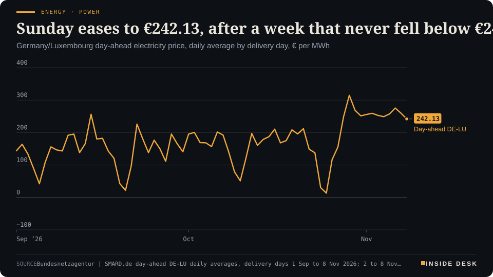
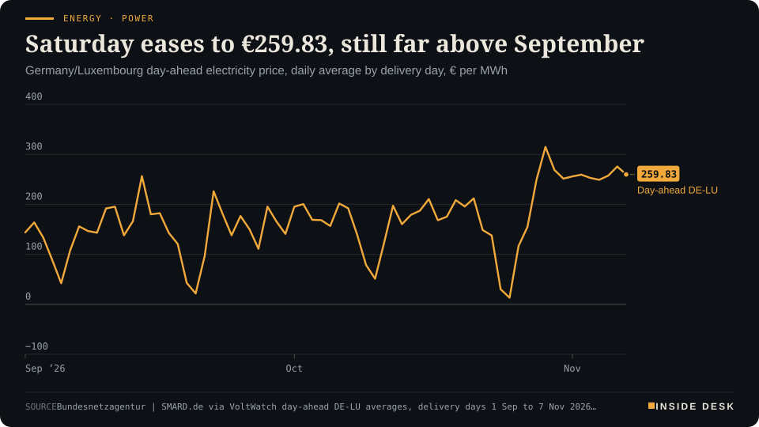
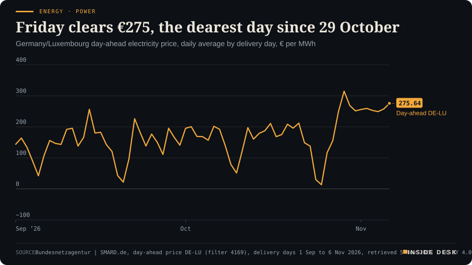
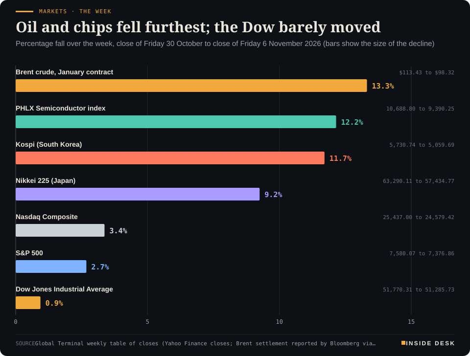

Inside Desk ePaper, Sunday Magazine · Sun 8 Nov 2026
Sunday, 8 November 2026Always free
Inside Desk
The Sunday MagazinePublished 10:23 CET · Berlin
Cover story · Energy & Industry
Brent had its steepest weekly fall since April 2020 after the midterms, yet German wholesale power never cleared below €242 a megawatt-hour all week. Chips crashed and bounced, COP31 opens in Antalya on Monday, and the week's most useful numbers were the dull ones: a 2.9% contribution rate, 190,000 soldiers and €2.15 off a tank.
Energy · PowerSunday eases to €242.13, after a week that never fell below €248Germany/Luxembourg day-ahead electricity price, daily average by delivery day, € per MWh

Line chart of the daily average German-Luxembourg day-ahead electricity price from 1 September to 8 November 2026, in euros per megawatt hour. It falls to €13.12 on Sunday 25 October during the storm, climbs to €314.85 on Thursday 29 October, and stays between €248.99 and €275.64 on every delivery day from 2 to 7 November. The latest value is €242.13 for delivery on Sunday 8 November, more than twice the €106.50 a year earlier and well above September's average near €145.
Source: Bundesnetzagentur | SMARD.de day-ahead DE-LU daily averages, delivery days 1 Sep to 8 Nov 2026; 2 to 8 Nov values as published by contracting.green from SMARD (Sunday 8 Nov €242.13, auction of 7 Nov), retrieved 8 Nov 2026 · CC BY 4.0 · CSV
Geo-economics · p. 5
Markets & Macro · p. 6
Climate & Weather · p. 17
The week in one sentenceOil fell hard on an American vote, German electricity stayed dear because November is dark and still, and the numbers that will matter most this winter were the quiet ones: a stable health-insurance rate, a record headcount in the army, and two euros off a tank of petrol.
ContentsInside Desk · Sunday Magazine8 November 2026
Brent had its steepest weekly fall since April 2020 after the midterms, yet German wholesale power never cleared below €242 a megawatt-hour all week. Chips crashed and bounced, COP31 opens in Antalya on Monday, and the week's most useful numbers were the dull ones: a 2.9% contribution rate, 190,000 soldiers and €2.15 off a tank.
11 edition pieces · 11 desks · Published 10:23 CET, 8 November 2026
22 ePaper extras, added , 8 November. They appear only in the ePaper and carry their own time.
17:30 Evening ePaper, updated live until 22:30 with an “Updated” time and a Latest page
Sun 10:00 The Sunday Magazine
Berlin time. Every issue is free.
How to read it
Swipe, use the arrow keys or the page strip. Tap any headline for the reading view. Press / to search, t for contents, +/− to zoom. Download the PDF.
The Sunday SequenceInside Desk · Sunday Magazine8 November 2026
Energy & Industry · The Sunday Sequence · 5 min
Brent had its steepest weekly fall since April 2020. German day-ahead power did not notice: every delivery day from Monday to Saturday cleared above €248 a megawatt-hour. Two markets, two masters, and one household bill that answers to neither this month.
If you had only read the oil pages this week, you would think energy had become cheap. It has not. It has become two things at once, and the useful work this Sunday is to keep them apart.
The barrel. Front-month Brent for January delivery lost $15.11 over the week, or 13.32%, to settle at $98.32 a barrel on Friday, according to Dow Jones Market Data1. That was its largest weekly percentage fall since the week ending 24 April 2020, and it ended a six-week winning streak1. The decisive day was Wednesday, after the US midterm results: Brent fell 8.7% to $94.62, its lowest settlement since 31 August2. Markets read the result as a rebuke of the war with Iran, and the vice-president read it the same way: “The reason we lost is the war,” JD Vance wrote2.
Then the barrel did what barrels do when the facts have not changed as much as the mood. It rose for two sessions, by $3.701, because tankers kept being attacked in the Strait of Hormuz and the Bab al-Mandeb, and because the president said on Thursday that “now we will make a decision” between a settlement and further strikes2. Brent is still 54.52% above where it stood a year ago1. A 13% fall from a high place is a fall, not a landing.
The wire. Now look at the other chart in this edition. The German-Luxembourg day-ahead price, the wholesale auction that sets the next day’s electricity, cleared at €259.31 a megawatt-hour for Monday, €252.85 for Tuesday, €248.99 for Wednesday, €257.38 for Thursday, €275.64 for Friday and €259.83 for Saturday3. Today, Sunday, it is €242.13, with the cheapest hour at 13:00 and the dearest at 18:003. A year ago the same Sunday cost €106.503.
Read the week in that order and the story is plain. Wednesday’s power, auctioned at noon on Tuesday, dipped by 1.5%3. Friday’s, auctioned on Thursday after oil had already crashed, rose 7.1% to the week’s high3. The two series did not move together because they do not answer to the same master. Oil answers to Washington, Tehran and the shipping lanes. German power in November answers to wind, darkness and the gas plants that fill the evening when the turbines are slow. That is why the dearest hour is 18:00 nearly every day: it is when you come home, switch on the light and cook, and when the sun has already gone.
Keep the scale in view, too. The auction price is only the energy share of your bill. Households paid on average 36.18 cents per kilowatt-hour in the first half of 2026, including taxes, levies and grid fees, according to Eurostat figures cited alongside the SMARD data3. Sunday’s €242.13 per megawatt-hour is 24.21 cents per kilowatt-hour before any of those are added3. Gas at the Dutch TTF hub averaged €86.81 per megawatt-hour in October, on the same page’s figures3. Gas still sets the evening price, and gas is not cheap.
The pump. The household does feel oil, but with a lag and through a filter. ADAC’s weekly survey on Wednesday found Super E10 at €2.041 a litre, 4.3 cents cheaper than a week earlier, and diesel at €2.260, down 2.9 cents4. The club pointed out that Brent had fallen about ten dollars in a week and said further price cuts “should be possible”, especially for diesel, which still costs almost 22 cents more than E104. Note the tense. The barrel moves in seconds; the price board moves when the forecourt’s stock and its competitors move. That lag is not a conspiracy. It is inventory, and it works in both directions.
The Sunday SequenceInside Desk · Sunday Magazine8 November 2026
Energy · PowerSunday eases to €242.13, after a week that never fell below €248Germany/Luxembourg day-ahead electricity price, daily average by delivery day, € per MWh
Line chart of the daily average German-Luxembourg day-ahead electricity price from 1 September to 8 November 2026, in euros per megawatt hour. It falls to €13.12 on Sunday 25 October during the storm, climbs to €314.85 on Thursday 29 October, and stays between €248.99 and €275.64 on every delivery day from 2 to 7 November. The latest value is €242.13 for delivery on Sunday 8 November, more than twice the €106.50 a year earlier and well above September's average near €145.
Source: Bundesnetzagentur | SMARD.de day-ahead DE-LU daily averages, delivery days 1 Sep to 8 Nov 2026; 2 to 8 Nov values as published by contracting.green from SMARD (Sunday 8 Nov €242.13, auction of 7 Nov), retrieved 8 Nov 2026 · CC BY 4.0 · CSV
The war that is about heat. There was a second energy war this week, and it was not about barrels. Overnight into Saturday Russia launched 172 drones and 36 ballistic missiles at Ukraine, President Zelenskyy said, and only four of the missiles were intercepted5. “The capital is facing serious difficulties with its electricity, water, and heat supplies,” he wrote, adding that substations had been hit in five regions5. Kyiv’s mayor called the energy situation “extremely difficult”5. US-brokered talks between Russia and Ukraine are due in Abu Dhabi on Tuesday5. In Europe we argue about the price of a megawatt-hour; in Kyiv the question this weekend is whether there is one at all.
The meeting that is about the wires. On Monday, COP31 opens in Antalya6. One of the host’s prominent aims is a voluntary goal on electrification, and Reuters puts its finger on the catch: unless the electricity is low-carbon, more of it does not curb emissions6. Turkey generated 34% of its power from coal last year, according to the think tank Ember, making it Europe’s biggest coal-fired generator6. Its energy minister says the country aims for 10 gigawatts of nuclear capacity by 2040, which Reuters calculates would roughly equal today’s coal-fired output6. That is a plan with a date on it, which is more than most speeches will offer this fortnight.
What the week argues. Three lessons, none of them exciting.
First, an oil price is a vote on the future, and votes can be counted again. The same week that sent Brent to $94.62 on Wednesday sent it back near $98 by Friday1,2. Treat any single day as a mood, not a price.
Second, your electricity is not priced in Brent. …
Geo-economicsInside Desk · Sunday Magazine8 November 2026
Geo-economics · 2 min
Washington's midterms took 13% off Brent in a week. Over the same days, missiles flew at Riyadh, tankers burned in Hormuz and a seafarer died in the Gulf. The supply map has its own calendar.
This desk’s job on a Sunday is to separate what the week decided from what it merely hoped. The oil market spent the week hoping, and with some reason. The supply routes spent it fighting.
What the vote did. Brent fell 8% on Wednesday alone after the Democrats swept the midterms, settling at two-month lows1. The result was read as a rebuke of the war with Iran and as a step towards de-escalation, which could mean more crude leaving the region1. “A bit of unwinding of the war premium seems to be what’s going on,” said Phil Flynn of Price Futures Group1. Spot premiums for Middle Eastern crude benchmarks have returned to pre-conflict levels, Reuters reports, a sign of an emerging surplus1.
What the routes did. On Thursday Tehran said three more ships had been struck in the Strait of Hormuz2. On Friday a Greek ship manager said a seafarer had been killed in a 5 November explosion on an oil-products tanker in the Gulf, believed to have been a missile attack, and UKMTO data suggested attacks on oil-carrying ships were still running close to a record pace1. On Sunday morning Iran said two more oil tankers had struck mines and caught fire while trying to cross the strait on unauthorised routes; it gave no further details4.
In the Red Sea corridor, the Saudi-led coalition said it had destroyed three Houthi ballistic missiles fired at the kingdom, two of them towards Riyadh3. The Houthis claimed six operations against targets including Aramco oil facilities and Riyadh airport3. Saudi Arabia shut its East-West crude pipeline, the main bypass of Hormuz, from 11 to 22 September after drone attacks, and the Houthis claimed further strikes on its pumping stations in late October2. The UN counts more than 1,600 people killed and almost 300,000 displaced in Yemen since a 2022 ceasefire collapsed in July3.
Why both can be true. A barrel’s price is a forecast of next quarter’s flows; a missile is this morning’s fact. Rystad’s Janiv Shah put it carefully: the crude market is loosening towards oversupply on paper, but longer routes and ship-to-ship transfers near Hormuz still separate what refiners can take from what is available1. “The market is still looking for evidence of a firm deal being signed,” he said1.
For you. Last week’s fall in crude is real and has reached the forecourt in small steps. But the routes that carry the oil were no calmer on Sunday than on Monday. …
Geo-economics · Short item · ePaper extra, added
The same week, the same continent, opposite signs. The split followed the chip supply chain, not the map.
If you want to see how specific last week’s sell-off was, look east. South Korea’s Kospi fell 11.71%, from 5,730.74 to 5,059.69, and Japan’s Nikkei 225 fell 9.25% to 57,434.771. Over the same days Hong Kong’s Hang Seng rose 5.10% to 24,481.86 and the Shanghai Composite 1.39%1. …
Geo-economics · Brief · ePaper extra, added
After meeting his security advisers on Thursday, President Trump announced a decision on new strikes soon, HeizOel24 reports1. Citing Axios, it says three paths are on the table: new attacks, more economic pressure, or a deal that would require Washington to move substantially towards Iran1. Qatar continues to mediate; Tehran has sent a proposal on the nuclear dispute to Washington via Doha, but demands that seven conditions be met before talks, including an end to sanctions1. Oil traders priced the middle of those outcomes this week. A choice between three paths is not yet a path.
Markets & MacroInside Desk · Sunday Magazine8 November 2026
Markets & Macro · 2 min
The S&P 500 lost 2.68% on the week, its worst since April 2025. The total hides the order: Wednesday's best day in three months came before Thursday's worst in 19.
On Sundays this desk puts the week back in the order it happened. This one needs it more than most, because the total, a 2.68% fall in the S&P 5005, describes no single day anyone lived through.
Monday: oil first. Brent fell 7.63% to $104.77 on hopes of US-Iran talks, and airlines rose1. The Dow gained 0.41% to 51,983.98, but the S&P 500 lost 0.51% to 7,541.40 and the Nasdaq 1.07%, as Oracle said it would raise $20 billion for data centres and its shares fell 8%1. The first crack of the week was a funding plan, not a vote.
Tuesday: the ballot. Americans voted. The S&P 500 and Nasdaq snapped three-session losing streaks while the Dow finished slightly lower2. Futures fell after hours as results came in2.
Wednesday: the relief. Democrats took both chambers, and the Dow jumped 1,569 points, or 3%, its fifth-largest one-day points gain; the S&P 500 rose 1.6%2. “Markets like gridlock,” said Andrew Slimmon of Morgan Stanley Investment Management2. But the same page carried the warning: Goldman Sachs said Democratic state wins made data-centre moratoriums more likely, potentially affecting about 45% of planned US capacity2. Nvidia fell 3% on the best day2.
Thursday: the bill for the relief. The Nasdaq fell 5.52% to 24,315.00, its deepest drop in 19 months, confirming a correction; the S&P 500 lost 4.36%3. The semiconductor index plunged more than 12%, and Reuters counted $3 trillion of S&P 500 value gone3. Volume was 26.9 billion shares against a 20-session average of 17.7 billion3. That is what a crowded exit sounds like.
Friday: the payslip. Payrolls beat expectations and unemployment fell to 4.1%4. Chips bounced 4.2%, AMD 11%, the S&P 500 0.32% to 7,376.864. Traders lifted the odds of a December Fed hike to 78%4. “AI has gone on trial several times in this cycle and come away with an innocent verdict,” said LPL Financial’s Adam Turnquist4. The jury, note, is still sitting.
Markets & Macro · Short item · ePaper extra, added
The index fell 2.68%. Most of the stocks Morningstar covers went up. Both are true, and the second is the more useful.
Index weeks are averages, and averages hide crowds. Morningstar’s weekly wrap counts the crowd: of the 880 US-listed companies its analysts cover, 480, or 55%, rose in the week to 6 November, four were unchanged and 396, or 45%, fell1. That was in a week when the S&P 500 lost 2.68% and the Nasdaq 3.37%1.
Where the damage sat. The worst sectors were energy, down 12.32%, and technology, down 6.71%1. The best were communication services, up 5.25%, and consumer cyclicals, up 2.36%1. …
Markets & Macro · Brief · ePaper extra, added
On Monday, Marvell Technology announced it would buy optical-components maker Lumentum for $115 billion; shares of the two fell about 13% and 18% that day1. By Friday the week’s tally was in: Lumentum was the second-worst performer among the US stocks Morningstar covers, down 35.96%, and Marvell the fifth-worst, down 28.12%2. Seagate, another data-infrastructure name, lost 28.43%2. Big deals are usually priced on the buyer’s confidence. This one was priced on the market’s doubts about the size of the AI build-out, which the election then deepened. Nothing here is investment advice.
Politics & InstitutionsInside Desk · Sunday Magazine8 November 2026
Politics & Institutions · 2 min
The coalition's amendment to the intelligence-services law lets the BND enter homes in secret, gives the Verfassungsschutz a look at organised crime, and adds a 'freeze' for telecoms data. The safeguards are in the sub-clauses, so that is where we read.
The Annex reads the paper behind the headline. This week’s paper is an amendment by the CDU/CSU and SPD parliamentary groups to the planned reform of Germany’s intelligence-services law, first reported by Politico and summarised by AFP1. The headline is that spies may enter homes. The document is more specific than that, and the specifics are what you would want to know.
Clause one: the flat. The Bundesnachrichtendienst, the foreign intelligence service, may enter homes secretly, including inside Germany, in order to prepare or carry out intelligence measures1. Special hurdles apply to homes in Germany and to homes of German citizens abroad1. The BND must order the entry explicitly, and the measure must be checked in advance by the Unabhängiger Kontrollrat, the Independent Control Council1. That is the first thing to read in any such law: who signs, and who checks before rather than after.
Clause two: the networks. The Bundesamt für Verfassungsschutz, the domestic service, may examine structures of organised crime when there are concrete indications that actors it already observes are being supported by them1. The coalition’s stated reason is that state and extremist actors use so-called “low-level agents” and “crime-as-a-service” offers1. The trigger is “concrete indications”, not suspicion in general. Watch whether that phrase survives.
Clause three: the freeze. Both services may instruct telecoms providers to store existing traffic data temporarily when there are concrete signs it may become relevant, even though the legal conditions for storing it are not yet fully met1. The services may not access the frozen data automatically; they need a separate request afterwards1. For the BND, the freeze may in principle last no more than three months1. This is a quick-freeze design: preserve first, justify access later, and only within a time limit.
What the minister said around it. Interior minister Alexander Dobrindt went further at a party event in Thuringia at the end of the week, saying the reform would give the legal basis to disrupt and even destroy attackers’ servers and software, including abroad, and adding that “this week it was cooling systems in supermarkets”2. The Bundestag takes up the reform this coming week2. Speeches describe ambitions; the amendment describes procedures. …
Politics & Institutions · Short item · ePaper extra, added
The search for Germany's next head of state is ending in procedure: party committees this weekend, a Federal Convention in winter.
Germany’s choice of a new federal president is moving through its committees. The CDU presidium meets on Sunday in Berlin, where party leader Friedrich Merz is expected to propose Ilse Aigner, the 61-year-old president of the Bavarian state parliament, as the Union’s candidate; an official announcement is expected on Monday1. Her nomination is considered certain, and the SPD and Greens have signalled they want to vote for her in the Federal Convention1. She would be the first head of state from the CSU and the first woman in the office1. On Instagram she wrote: “There is a lot to do in the future and I look forward to making my contribution” (desk translation)1.
The criticism is about process. Green Bundestag vice-president Omid Nouripour said he valued Aigner highly and thought she would be a good candidate, but that Merz had once again let an important personnel process slip, and that his group could only formally discuss a proposal once Merz actually made one rather than leaking it to the press2.
The date. The Federal Convention elects the next president on 30 January2. Until then the useful thing to watch is not the candidate but the arithmetic of the convention’s delegates, which is where an election of this kind is actually decided.
Politics & InstitutionsInside Desk · Sunday Magazine8 November 2026
Of the €1.2 billion earmarked this year from the federal special fund for education infrastructure, only about €7 million has flowed into schools, nurseries and research buildings, the Rheinische Post reports, citing the finance ministry1. That is not even 1% of the money available1. The ministry blames administrative agreements between the federal government and the states that were concluded late1. The Greens’ deputy group leader Khan called it “scandalous”1. Money that exists but cannot move is the most frustrating kind of budget problem, and the dullest to fix: it needs signatures, not speeches.
Psychology & BehaviourInside Desk · Sunday Magazine8 November 2026
Psychology & Behaviour · 2 min
A global survey finds people rate their own relationships and sense of meaning highly, and their country's politics and economy poorly. The young score lowest on vitality. Hybrid workers beat fully remote ones.
After a week of election nights and market alarms, here is a study about the distance between your kitchen table and your news feed.
The survey. About 50,000 people in 92 countries answered ten questions on mental health, covering optimism, self-esteem, positive emotions, engagement and vitality, followed by measures of stress, depression, anxiety and life satisfaction1. More than 260 researchers took part, led by Kai Ruggeri of Columbia University’s Mailman School of Public Health; the results are published in Social Indicators Research1.
The finding that travels. Respondents scored highest on relationships, sense of meaning, competence, engagement and self-esteem1. In other words, they tended to view themselves and their own circumstances positively. At the same time they viewed external factors, such as political and economic stability in their country, negatively, and felt heavily burdened by them, which the authors link to anxiety, stress and burnout1. Experts call this the “optimism gap”: a good view of one’s own life alongside a dark view of society and the future1.
The finding that worries. Young people in particular lack basic elements of well-being, especially vitality, emotional stability and resilience1. “It is now necessary to develop concrete measures to strengthen the mental health of young people,” said Ruggeri1.
The dull variables. As so often, the ordinary circumstances explain much. Employment and higher income go with better mental health; lower formal education goes with lower well-being; people who live alone score lower than those who live with others1. One detail for anyone arguing about the office: hybrid workers, mixing home and office, scored higher than those working fully remotely1.
What it does not say. The survey was conducted mainly online, so it reaches the connected more easily than the isolated, and an association is not a cause1. It cannot tell you whether the news makes people anxious or anxious people read more news.
For you. If this week left you feeling that everything is going wrong, try the survey’s own split. List what is going wrong out there, then what is going right in here. …
Psychology & Behaviour · Short item · ePaper extra, added
Strategists reached for courtroom language this week. The more interesting habit was to check a dull commodity before believing the mood.
Markets tell stories about themselves, and this week’s story borrowed the language of a courtroom. “AI has gone on trial several times in this cycle and come away with an innocent verdict,” said LPL Financial’s Adam Turnquist on Friday, describing Thursday’s sell-off as “a little bit of a knee-jerk reaction”1. Truist’s Keith Lerner said his firm was “still giving technology the benefit of the doubt”1.
A survey of about 50,000 people in 92 countries, published in Social Indicators Research, found that people who live alone generally have lower well-being than those who live with others1. In the workplace, people on hybrid models, combining home and office, scored higher than those in fully remote jobs1. Employment and higher income went with better mental health, and lower formal education with lower well-being1. None of this proves cause. It does suggest where to look first when someone you know is struggling: not only at their mindset, but at their circumstances, and at who they see in a week.
Energy & IndustryInside Desk · Sunday Magazine8 November 2026
Energy & Industry · Short item · ePaper extra, added
The crude crash met a product market with its own problems. That is why heating oil and diesel fell less than the barrel.
Crude had its biggest weekly fall since April 2020, but the products you actually burn told a tighter story, HeizOel24 reports1. Three things kept a floor under them.
China’s diesel. China is exporting less diesel in November because its own stocks are empty1. Diesel and heating oil are close cousins, so a smaller supply from a big refining country matters for Europe’s winter.
The mines. Iran’s Revolutionary Guards reported three more tankers hit on Thursday, two by mines and one with a fire on board, and two further ships said to have hit mines on Friday morning1. The UK’s maritime security agency UKMTO already lists 35 ships for October, the highest since the war began1.
The ticker. Brent stood at $97.97 a barrel and gasoil at $1,366.75 a tonne on HeizOel24’s panel at 09:00 on Sunday1. On Friday morning German heating oil rose about three cents to a national average of €1.71 a litre after Thursday’s monthly low1.
For you. The gap between the crude headline and your fuel price is not mysterious. It is the refining and shipping step in between, and this week that step was under strain from two directions at once.
Energy & Industry · Brief · ePaper extra, added
Europe and Germany receive only a small share of their gas via the Strait of Hormuz, NDR notes, but the region is decisive for the world market: looming scarcity drives competition for the remaining gas, including US LNG, which makes up a quarter of EU-wide deliveries1. Almost all LNG reaching Germany now comes from the US, more than 90%1. Most German imports still arrive by pipeline from Norway and the Netherlands, where domestic production is falling1. Exchange prices tripled by the autumn after the Iran war began, NDR says, which made filling storage over the summer unattractive1. Diversification has produced a new single dependence to watch.
Money, FX & CommitteesInside Desk · Sunday Magazine8 November 2026
Money, FX & Committees · 2 min
Payrolls beat, unemployment fell to 4.1%, and traders raised their bets on a Fed hike next month. Yields still ended the week lower. The rate desk's week was about the same two numbers the stock desk ignored.
The rate desk watched the same week as everyone else and drew a different line through it. Its line runs from Thursday’s Fed speeches to Friday’s payslips, and it ends at a December meeting.
The signal. On Thursday, Cleveland Fed president Beth Hammack and Richmond Fed president Thomas Barkin hinted at the possibility of further rate rises, Reuters reported; traders already expected a hike next month following the September rise2. On Friday, October payrolls rose more than expected and the unemployment rate fell to 4.1%1. LSEG data then put the chance of a December move at 78%, up from 70% earlier1.
The quote that sums it up. “We’re worried about the Federal Reserve raising interest rates after the jobs report this morning,” said John Kilduff of Again Capital, speaking about oil5. Joe Saluzzi of Themis Trading asked the other half of the question: “Will the Fed want to raise interest rates in the face of a market which is teetering?”1. Both are fair. Only one committee answers them, and it meets in December.
The yields. For all that, the week ended with lower yields. The ten-year Treasury fell to 4.86% from 4.94%, and the two-year to 4.51% from 4.56%3. Global Terminal notes that the two-year rose 0.05 point on Friday alone after the jobs report, but was still down on the week4. Safety demand from Thursday’s sell-off and a lower oil price pulled one way; a strong labour market pulled the other.
The dollar and the euro. The dollar index rose about 0.4% on the week and the euro slipped about 0.36% to roughly $1.1142, on Global Terminal’s late-Friday levels4. Gold rose 4.88% on the week to $4,065.90 on Comex3. For a euro saver, the dollar move is small; it matters mostly to what you pay for anything priced in dollars, from fuel to holidays.
For you. The figure to circle is Tuesday’s inflation print4. A hot reading would make the 78% look cheap; a soft one would give the committee room to wait. Either way, the decision belongs to a dull meeting with minutes, not to a trading screen. Nothing here is investment advice.
Money, FX & Committees · Short item · ePaper extra, added
Next week the US Treasury sells debt on Monday, Tuesday and Thursday. Tuesday also brings consumer prices.
The money desk’s week ahead has a timetable worth pinning up. The US Treasury auctions $58 billion of three-year notes on Monday 9 November, $42 billion of ten-year notes on Tuesday and $25 billion of 30-year bonds on Thursday, each at 13:00 New York time, 19:00 in Berlin1. Desk arithmetic: that is $125 billion of new debt in four days.
The figure in the middle. October’s consumer price index is due on Tuesday at 08:30 New York time, 14:30 CET, hours before the ten-year sale1. Producer prices follow on Friday 13 November2. After Friday’s jobs report, traders put a 78% chance on a Fed hike in December3. …
Money, FX & Committees · Brief · ePaper extra, added
The euro stood at $1.1141 on Sunday at 09:00, on HeizOel24’s price panel1. It had closed Friday 30 October at $1.1183 and slipped about 0.36% over the week to Friday, as the dollar index rose about 0.4%2. Desk arithmetic: from $1.1183 to $1.1141 is 0.42 US cents per euro. For households the euro-dollar rate matters mostly because oil and its products are priced in dollars: a weaker euro takes back a little of what a falling Brent gives. This week Brent fell 13%, so the currency’s slide was small beside it. Nothing here is investment advice.
Ordinary & Inherited LifeInside Desk · Sunday Magazine8 November 2026
Ordinary & Inherited Life · 2 min
Oil fell hard this week. The household ledger shows what reached you: a few cents a litre at the pump, nothing yet on the electricity bill, and heating oil that barely moved.
The Ordinary Ledger takes the week’s big numbers and turns them into lines on a household budget. This week the big number was oil’s 13% fall. Here is what of it reached the ledger.
The pump. ADAC’s survey on Wednesday found Super E10 at €2.041 a litre, down 4.3 cents on the week, and diesel at €2.260, down 2.9 cents1. Diesel still costs almost 22 cents a litre more than E101. ADAC said further cuts should be possible given the fall in crude, and noted that E10 briefly dipped below €2 nationally just before the daily price rise at noon1.
Desk arithmetic: a 50-litre tank of E10 at €2.041 costs €102.05; at the previous week’s price, 4.3 cents higher, it cost €104.20. That is €2.15 saved per tank. For diesel at €2.260, a 50-litre fill costs €113.00, €1.45 less than a week earlier.
The noon rule. ADAC’s practical advice has not changed, and it is the cheapest thing in this ledger: fill up shortly before 12:00, when prices are at their lowest in the daily cycle1. That is a habit, not a gamble.
The wire. Sunday’s wholesale power price is 24.21 cents per kilowatt-hour on average, with the cheapest hour at 13:00 (21.14 cents) and the dearest at 18:00 (31.71 cents)2. A year ago the same day averaged 10.65 cents2. Households paid 36.18 cents per kilowatt-hour on average in the first half of 2026 including all taxes, levies and grid fees, on Eurostat figures2. If you are on a fixed contract, none of this week’s moves reaches you until your supplier’s next price change; on a dynamic tariff, it reaches you hour by hour2.
The tank in the cellar. Heating oil stood at €171.69 per 100 litres in the reading of 2 November2. Desk arithmetic: 2,000 litres at that price is €3,433.80. Heating oil follows diesel more than it follows the headlines.
The bottom line. The week’s crash in crude was worth about €2 a tank to a petrol driver and nothing yet to anyone’s electricity bill. That is not unfair; it is the order in which stocks bought at older prices run out. The ledger will show the next step only when it happens.
Ordinary & Inherited Life · Short item · ePaper extra, added
When the price dipped mid-week, households noticed. Then it rose three cents in a morning.
Households with an oil tank did something sensible this week: they watched. HeizOel24 reports that as the domestic heating-oil price fell to its monthly low after Wednesday’s crash in crude, demand climbed to a monthly high1. On Friday morning the price moved back up by about three cents a litre, to a national average of €1.71, as crude recovered part of its fall1. On Sunday at 09:00 the average for a 3,000-litre order stood at €169.43 per 100 litres1.
Desk arithmetic: 3,000 litres at Sunday’s €169.43 per 100 litres costs €5,082.90. A three-cent move on that order is €90.
Why it jumps around. Heating oil follows gasoil, the wholesale product, more than crude itself, and gasoil has its own worries: China is exporting less diesel in November because its own stocks are low, HeizOel24 notes1.
Ordinary & Inherited Life · Brief · ePaper extra, added
Since 2025, every electricity supplier must offer a dynamic tariff to customers who have a smart metering system1. On such a tariff you pay the exchange price of each hour plus the fixed charges1. On Sunday the cheapest hour is 13:00 at 21.14 cents per kilowatt-hour wholesale and the dearest is 18:00 at 31.71 cents1. A dynamic tariff pays off if you can shift large loads such as a heat pump, a wallbox or a home battery into the cheap hours; if you cannot, you carry the full risk of expensive evenings1. It is a tool for homes with flexible loads, not a bargain for everyone.
Tech & ComputeInside Desk · Sunday Magazine8 November 2026
Tech & Compute · 2 min
While the AI trade crashed and bounced, the industry's real constraint was quietly priced elsewhere: in the plants that glue chips together. Advanced packaging revenue is set to overtake the traditional kind this year.
The week’s AI story was told in index points. The more durable story was told in factory floors, and it is about the least glamorous step in making a chip: packaging.
What changed. Packaging used to mean protecting a chip and connecting it to a circuit board. For AI processors it now means joining processors and memory on a shared base so they work as one system at high speed1. As shrinking transistors gets harder and dearer, more of the performance gain comes from this step1. “Packaging was always that thing that you just didn’t worry about,” former Intel chief executive Pat Gelsinger told reporters in Taipei; he estimates it could eventually account for as much as half the value of a chip product1.
The numbers. Research firm Yole Group forecasts that revenue from advanced packaging will overtake the traditional route for the first time in 2026, with capital spending on it nearing $28 billion1. Nvidia is providing billions of dollars in financing to expand CoWoS packaging capacity at SPIL, a unit of Taiwan’s ASE, according to an industry executive cited by Reuters; Nvidia did not comment and ASE does not comment on rumours1. AMD has unveiled more than $10 billion of investment across Taiwan’s chip industry, including packaging partnerships1. Taiwan’s Powertech plans to put $400 million into a packaging joint venture with Broadcom in Singapore1.
The quote that matters. “The most important thing right now is capacity,” said Powertech’s Jim Lin, adding that customers were waiting for the company to ramp up1. AMD’s Lisa Su, asked about alternatives to TSMC, said simply: “we do need more capacity overall”1.
The memory twist. On Friday TSMC’s US-listed shares rose more than 6% in early trading on a report by The Information that it is drawing up plans to make 3D DRAM, a stacked memory, at Nvidia’s request2. TSMC told the publication its focus remains its core foundry business, and no timeline has been disclosed2. Memory is cyclical, India Today notes: today’s shortage can be tomorrow’s glut2.
For you. When a market tells you the AI build-out is over on Thursday and back on Friday, look at the queues instead. Customers waiting for packaging capacity is not a mood. It is an order book.
Tech & Compute · Short item · ePaper extra, added
Before the vote, before the crash, the first sign of strain was in the financing.
The week’s tech story is usually told from Thursday. It started on Monday, with a funding plan. Oracle said it plans to raise $20 billion, half through common stock and half through corporate bonds, to fund AI data-centre construction, and its shares fell 8% that day1. Companies’ plans for large-scale fundraising to expand AI infrastructure stirred investor caution, the Asia Business Daily reported from New York1.
Then the vote. On Wednesday, after the midterms, Goldman Sachs analysts said Democratic state-level wins made data-centre moratoriums more likely, potentially affecting about 45% of planned US capacity, according to Investopedia2. Franklin Templeton’s Stephen Dover said the election was unlikely to reverse demand for AI infrastructure but “could change where facilities are built, how quickly projects proceed and who pays”2.
Tech & Compute · Brief · ePaper extra, added
Advanced Micro Devices reported third-quarter revenue of $13.3 billion, ahead of expectations, with profit of nearly $2.43 billion, roughly in line, and guided fourth-quarter revenue above the consensus, Investopedia reported on Wednesday1. Its shares were up about 3% that morning1. Then Thursday’s chip sell-off arrived, and on Friday AMD added 11% as semiconductors bounced 4.2%2. The company’s numbers did not change between Wednesday and Friday; the market’s mood about its customers did. Results are the slow evidence beneath fast prices. Nothing here is investment advice.
Health & CareInside Desk · Sunday Magazine8 November 2026
Health & Care · 2 min
The health ministry has set the average additional contribution for statutory insurance at 2.9%, unchanged. Spending is expected to grow by under 3% next year after almost 7% this year. Your own fund still sets its own rate.
This week’s health story is not an outbreak. It is a percentage, and it arrives in every payslip.
The number. The federal health ministry has set the average additional contribution rate for statutory health insurance in 2027 at 2.9%, the same as this year1. It is based on the estimate of the GKV’s forecasting group of 14 October, which expects spending to grow much more slowly next year than in 20261. The exact rate for your fund is set by the fund itself1.
Why it held. The ministry credits a contribution-stabilisation law, which it says relieves the funds by up to €19 billion next year1. Spending is then expected to rise by less than 3%1. That would be the first time in three years that spending growth is covered by growth in revenue; this year, spending is expected to rise by almost 7%1.
The minister’s sentence. “The average additional contribution rate has risen further and further in recent years. We have now stopped this development,” said health minister Carsten Linnemann, adding: “But it is clear: this can only be a first step” (desk translation)1. The structural problems, he said, must be tackled, and a commission will present further proposals this year1. The ministry dates that to the end of 20261.
What it does not say. An average is a reference figure, not a bill. Funds above it can stay above it, and funds below can rise towards it. A one-year relief of up to €19 billion is also a one-year measure unless the commission finds something lasting1.
For you. Two quiet tasks this autumn. When your fund writes about its 2027 rate, compare it with the 2.9% reference. And when the commission reports, read what it proposes for hospitals and drugs, because that is where the 7% came from. Neither task is urgent. Both are cheaper than surprise.
Health & Care · Short item · ePaper extra, added
A Hannover-Würzburg study finds a wide gap between risk and diagnosis on German wards. A quality contract with an insurer is trying to close it.
Hospital food is an old joke. The figures are not. In prospective studies, at least 30% to 70% of hospital patients in Germany are malnourished, according to Hannover Medical School (MHH)1. Yet in an analysis of representative health-insurance data, researchers from Hannover and Würzburg found malnutrition was diagnosed in only 1.16% to 1.30% of inpatients1. Of those diagnosed, just 2.77% to 4.45% received nutrition therapy1.
Why it matters. Malnutrition means a lasting deficit of nutrients such as vitamins, minerals or protein, and it can follow cancer, gut disease, infections or some medicines1. …
Health & Care · Brief · ePaper extra, added
In the phase 2 AMPLIFY-7P trial, published in Nature Medicine, 144 people with KRAS-mutated pancreatic cancer who had finished surgery and chemotherapy were randomised to the experimental vaccine camupepimut or observation1. The vaccine activated KRAS-targeting T cells in nearly 99% of the vaccine group1. But it missed its primary endpoint: median disease-free survival was 23.8 months against 21.2 months, not statistically significant1. A phase 3 trial is planned1. “Seeing the cancer is the first step,” said oncologist Jason Williams, who was not involved. “Clearing it is another”1. An honest miss is how medicine learns where to look next.
Security & OrderInside Desk · Sunday Magazine8 November 2026
Security & Order · Podium vs Print · 2 min
The defence minister says volunteers will do and conscription can wait. The record is real. So is the distance to the 2035 target.
Podium
“If the course continues, we will have no growth problems. (Desk translation)”
Boris Pistorius, German defence minister, to the Funke media group, Published Saturday 7 November 2026
Print190,000 of 260,000
About 186,200 active soldiers at the end of September, 190,000 passed in early October; the build-up plan targets at least 260,000 by 2035.
Defence ministry figures and the Bundeswehr's build-up plan, as reported by ZDFheute, Saturday 7 November 2026, 14:05 CET
The podium. On Saturday, after young people had marched against conscription, Defence Minister Boris Pistorius told the Funke newspapers that the measures in the new military-service law were working. “If the course continues, we will have no growth problems,” he said, in this desk’s translation; then there would be no need for a discussion about any form of conscription1. He also answered the marchers directly: “When the demonstrations say we do not want to go to the front and die in a war, I can only say: we want exactly the same” (desk translation)1.
The print. The ministry counted about 186,200 active soldiers at the end of September, 4,500 more than a year earlier; in early October, its strongest hiring month, the 190,000 mark was passed for the first time1. Pistorius told Deutschlandfunk this was the largest strength since 2013, with many soldiers signing on for longer2. The build-up plan sets a target of at least 260,000 active soldiers by 2035, and a reserve rising from about 70,000 to at least 200,0001.
The gap. Desk arithmetic: from 190,000 to 260,000 is about 70,000 more soldiers in roughly nine years, net of everyone who leaves. ZDF adds the detail that matters most: 190,000 is the upper edge of the legal target corridor for 2026, inside which conscription is not on the table, and next year it becomes the lower edge1. The bar rises on 1 January whatever October looked like. Pistorius himself allowed that the curve could fall in a few years, and said that then the government would have to react2.
What it does not say. A strength figure counts heads on one day. It does not show how many recruits stay past their first contract, which is where staffing plans usually fail quietly. The October hiring figures arrive in mid-November1.
For you. This is a good number and a fair argument at once. Hear the confidence, then put the target beside the record. The 190,000 is the best figure in 13 years2. The 70,000 is the work still to do.
Security & Order · Short item · ePaper extra, added
A gunman fired from a car on one of Europe's best-known squares. Poland's prime minister called it terrorism.
At around 15:00 on Saturday, a man who had driven a car into Kraków’s main market square began shooting at random people from inside the vehicle, police said1. At least six people were killed, four women and two men, among them three Polish women and a British national, and 16 were injured, five of them from Austria, Germany, Portugal, Russia and Britain1. The suspect, a 25-year-old Polish man who acted alone, was wounded in an exchange of fire with police1.
“Until now in Poland we haven’t had such drastic cases of terrorism,” Prime Minister Donald Tusk said in Kraków1. On Saturday night he said police had found the bodies of two women and a man at the suspect’s home in Ostrowiec Świętokrzyski, with “much to suggest” they were members of his immediate family1. Interior Minister Marcin Kierwiński said the man was “fascinated by far-right ideologies” and held “ultranationalistic” and “very radical” views1. More weapons and ammunition were found in his car1.
Security & OrderInside Desk · Sunday Magazine8 November 2026
Security & Order · Brief · ePaper extra, added
Russia launched 172 drones and 36 ballistic missiles at Ukraine, including North Korean-made KN-23 missiles, President Zelenskyy said on Saturday; only four of the missiles were intercepted1. “Unfortunately, there is still a significant shortage of interceptors for Patriot systems, and the United States is in the best position to help address it,” he said1. The attacks killed at least two people and damaged energy facilities and a key bridge in Kyiv1. US-brokered talks between Russia and Ukraine are due in Abu Dhabi on Tuesday1. Air defence is a stock-and-flow problem: what matters is not the launcher but the magazine behind it.
Climate & WeatherInside Desk · Sunday Magazine8 November 2026
Climate & Weather · 2 min
Nearly 200 countries meet from 9 to 20 November. The host wants a voluntary target for more electrification. The test is what generates the electricity: last year a third of Turkey's came from coal.
After a week of weather stories from other places, the climate desk looks forward. On Monday the world’s climate negotiators sit down in Antalya, and the useful preparation is to know what is actually on the table.
The calendar. The opening plenary of COP31, formally COP 31/CMP 21/CMA 8, is scheduled for 10:00 on Monday 9 November at the conference venue in Soğucaksu, Antalya, which is 08:00 in Berlin1. Talks run until 20 November, with a separate Antalya Leaders Summit for heads of state and government on 11 and 12 November1,2. Nearly 200 countries are taking part2.
The inheritance. COP30 in Belém last November adopted a package calling for adaptation finance to be tripled by 2035 and agreed a mechanism to support workers and communities in the energy transition2. It left a major gap on fossil fuels: the final agreement had no roadmap away from them, despite calls from more than 80 countries2. Antalya is expected to focus on implementing existing commitments rather than adding new pledges2.
The host’s idea, and its catch. One of the prominent aims is a voluntary goal on increasing electrification, proposed by Turkey3. Reuters notes the catch plainly: unless the electricity is low-carbon, more of it will not curb emissions3. Coal was Turkey’s largest power source last year at 34% of generation, according to the think tank Ember, making it Europe’s biggest coal-fired generator3. The energy minister, Alparslan Bayraktar, says a just transition is difficult because the mines employ thousands, and points to a target of 10 gigawatts of nuclear capacity by 20403.
The view from beside the mine. A few hundred kilometres west, in İkizköy near the Akbelen forest, villagers who have protested for years against lignite mining want leaders to come and look. “They should come here, those heads of state,” said local official Nejla Işık3. Human Rights Watch said in October that Turkish authorities had arbitrarily arrested and prosecuted environmental protesters in Akbelen; the government says police intervene when demonstrations are unlawful3.
At home. Green parliamentary leader Katharina Dröge called it an embarrassing signal that Chancellor Merz is skipping the conference, and urged Germany to join a group of countries including France, Spain and Denmark that back solidarity levies on aviation and fossil-fuel firms4.
For you. Ignore the opening speeches. …
Climate & Weather · Short item · ePaper extra, added
Germany burned less gas than usual in the last week of October. The weather is doing much of the work, and storage is lower than it should be.
In the week from 26 October to 1 November, Germany consumed 18 terawatt-hours of gas, 14.2% less than usual for that calendar week in 2018 to 2021, according to NDR’s tracker of official data1. Gas use depends heavily on weather and season: in summer, sometimes only 10 TWh a week is used; in winter it can be more than 301.
Climate & Weather · Brief · ePaper extra, added
The US National Weather Service in San Juan issued a flash-flood warning for Bayamón and Toa Alta at 14:46 local time on Saturday, after radar indicated thunderstorms had dropped 1 to 2 inches of rain with another 1 to 2 possible1. Flood advisories covered San Juan, Guaynabo, Carolina, Fajardo and other municipalities1. Saturated soils raise the chance of quick river rises and isolated mudslides; forecasters expected showers to ease from Sunday into Monday, with a high risk of rip currents on northern beaches through the weekend1. The warning was based on radar, not confirmed damage1. A warning issued early is a system working, not an alarm overdone.
Weekend readingInside Desk · Sunday Magazine8 November 2026
Weekend reading
The 2026 Ledger
The year so far, month by month, in the order the invoices arrived.
3 January 2026 · Geo-economicsA president removed, a barrel unimpressedVenezuela changed hands over a weekend. The oil market read the supply sheet and went back to its glut. It was right about Venezuela, and about nothing that came next.
20 February 2026 · Politics & InstitutionsThe court sends the invoice backSix justices said a tariff is a tax, and taxes belong to Congress. The refund goes to whoever signed the customs entry, which is rarely the person who paid the higher price.
March 2026 · Energy & IndustryThe month a strait became a priceTwenty million barrels a day stopped moving, and the world's emergency cupboard opened wider than ever before. Both facts were true. Only one of them was a solution.
14 April 2026 · Markets & MacroA reference forecast is a hope with a footnoteThe IMF did not publish a baseline in April. It published a reference case and said, in plain print, that the world was drifting away from it. Read the footnote first.
22 May 2026 · Money, FX & CommitteesA new chair, the same arithmeticThe Federal Reserve changed its chair in the middle of an energy shock. If you expected the new face to bring cheaper money, the committee's next four months are the answer.
11 June 2026 · Money, FX & CommitteesFrankfurt raises into a supply shockThe textbook says look through an energy shock. The ECB chose not to, for the first time in this cycle, and said exactly why. The interesting word was 'robust'.
14 July 2026 · Security & OrderSixty days was the honest clauseA June memorandum promised safe passage through Hormuz, free of charge, for sixty days only. The price fell as if the strait had reopened. It had reopened on paper.
August 2026 · Geo-economicsSix months, five ships a dayHalf a year into the war, the strait carried a twentieth of its old traffic. The world adapted around it, by pipeline, by detour and by drawing down the cupboard. The cupboard was the part with a bottom.
10–16 September 2026 · Money, FX & CommitteesThe bypass breaks, both banks hikeIn one week the pipeline that carried Saudi oil around Hormuz was hit, the ECB raised rates and the Fed did the same. The Fed decided on the very day the ECB's increase took effect. The tank had made the argument for both.
13 October 2026 · Markets & MacroResilience is an inventorySix months after April's warning, the IMF's growth number had not moved and its inflation number had. The Fund's own explanation is a list of things that run down.
The week in desk comments
One line from each desk. Tap to read the piece behind it.
Energy & Industry
Markets & Macro
Security & Order
Geo-economics
Politics & Institutions
Psychology & Behaviour
Money, FX & Committees
Ordinary & Inherited Life
Tech & Compute
Health & Care
Climate & Weather
Data spreadInside Desk · Sunday Magazine8 November 2026
The week in data
Interactive: hover or tap for values, switch series on and off, change the time range.
Energy · PowerSunday eases to €242.13, after a week that never fell below €248Germany/Luxembourg day-ahead electricity price, daily average by delivery day, € per MWh
Line chart of the daily average German-Luxembourg day-ahead electricity price from 1 September to 8 November 2026, in euros per megawatt hour. It falls to €13.12 on Sunday 25 October during the storm, climbs to €314.85 on Thursday 29 October, and stays between €248.99 and €275.64 on every delivery day from 2 to 7 November. The latest value is €242.13 for delivery on Sunday 8 November, more than twice the €106.50 a year earlier and well above September's average near €145.
Source: Bundesnetzagentur | SMARD.de day-ahead DE-LU daily averages, delivery days 1 Sep to 8 Nov 2026; 2 to 8 Nov values as published by contracting.green from SMARD (Sunday 8 Nov €242.13, auction of 7 Nov), retrieved 8 Nov 2026 · CC BY 4.0 · CSV
Energy · PowerSaturday eases to €259.83, still far above SeptemberGermany/Luxembourg day-ahead electricity price, daily average by delivery day, € per MWh

Line chart of the daily average German-Luxembourg day-ahead electricity price from 1 September to 7 November 2026, in euros per megawatt hour. It falls to €30.12 on Saturday 24 October and €13.12 on Sunday 25 October during the storm, then climbs to €314.85 on Thursday 29 October. Friday 6 November averaged €275.64; the latest value is €259.83 for delivery on Saturday 7 November, still well above September's average near €145.
Source: Bundesnetzagentur | SMARD.de via VoltWatch day-ahead DE-LU averages, delivery days 1 Sep to 7 Nov 2026; Saturday 7 Nov base €259.83 (VoltWatch, stand 6 Nov 2026 ~13:00 CET); Friday 6 Nov €275.64 from prior SMARD series · CC BY 4.0 / reported open auction · CSV
Data spreadInside Desk · Sunday Magazine8 November 2026
Energy · PowerFriday clears €275, the dearest day since 29 OctoberGermany/Luxembourg day-ahead electricity price, daily average by delivery day, € per MWh
Line chart of the daily average German-Luxembourg day-ahead electricity price from 1 September to 6 November 2026, in euros per megawatt hour. It falls to €30.12 on Saturday 24 October and €13.12 on Sunday 25 October, then climbs to €314.85 on Thursday 29 October. From late October most delivery days stay near or above €250; Thursday 5 November is €257.38 and Friday 6 November is €275.64, the highest daily average since 29 October.
Source: Bundesnetzagentur | SMARD.de, day-ahead price DE-LU (filter 4169), delivery days 1 Sep to 6 Nov 2026, retrieved 6 Nov 2026 · CC BY 4.0 · CSV
Energy · PowerFriday clears €275, the dearest day since 29 OctoberGermany/Luxembourg day-ahead electricity price, daily average by delivery day, € per MWh

Line chart of the daily average German-Luxembourg day-ahead electricity price from 1 September to 6 November 2026, in euros per megawatt hour. It falls to €30.12 on Saturday 24 October and €13.12 on Sunday 25 October during the storm, then climbs to €314.85 on Thursday 29 October, the highest daily average of 2026 so far. From 29 October every delivery day has stayed near or above €250, with Wednesday 4 November at €248.99 and Thursday 5 November at €257.38, and the latest value is €275.64 for delivery on Friday 6 November, the highest since 29 October.
Source: Bundesnetzagentur | SMARD.de, day-ahead price DE-LU (filter 4169), delivery days 1 Sep to 6 Nov 2026, retrieved 5 Nov 2026 · CC BY 4.0 · CSV
Latest values
Series
Value
Date
Chart
Day-ahead DE-LU
242.13
8 Nov 2026
Sunday eases to €242.13, after a week that never fell below €248
Day-ahead DE-LU
259.83
7 Nov 2026
Saturday eases to €259.83, still far above September
Day-ahead DE-LU
275.64
6 Nov 2026
Friday clears €275, the dearest day since 29 October
Day-ahead DE-LU
275.64
6 Nov 2026
Friday clears €275, the dearest day since 29 October
Last data point of the main series in each chart above, from the Inside Desk data archive. Sources under each chart.
Back pageInside Desk · Sunday Magazine8 November 2026
Before you close the tab
The day in one sentence
Oil fell hard on an American vote, German electricity stayed dear because November is dark and still, and the numbers that will matter most this winter were the quiet ones: a stable health-insurance rate, a record headcount in the army, and two euros off a tank of petrol.
One thing you can do this week
On Sunday evening, write three numbers on one card: what a litre of fuel cost the last time you filled up, the price per kilowatt-hour on your electricity contract, and how full your heating-oil tank is or what your gas meter reads. Do the same next Sunday. After a month you will know which of this winter's headlines actually reached your house, and which only reached the news.
A habit, not advice.
What went right
Researchers in Hannover and Würzburg note that prospective studies put malnutrition among hospital patients at 30% to 70% at least, yet only 1.16% to 1.30% of inpatients are diagnosed with it. Instead of stopping at the warning, Hannover Medical School signed a contract with the Techniker Krankenkasse so that insured patients are screened for malnutrition on admission, during longer stays and at discharge, with the insurer paying for it, and the data will go to the body that sets hospital quality rules 1. A study found a gap; a clinic and an insurer wrote a contract to close it.
In euros at home
ADAC's survey on Wednesday put Super E10 at €2.041 a litre, 4.3 cents cheaper than a week earlier, and diesel at €2.260, 2.9 cents cheaper 2. Desk arithmetic: on a 50-litre tank that is €2.15 saved on petrol and €1.45 on diesel. For electricity, Sunday's wholesale average of 24.21 cents per kilowatt-hour compares with a household average of 36.18 cents including taxes, levies and grid fees in the first half of 2026 3; on a fixed contract, this week's wholesale moves do not reach your bill until your supplier's next price change 3.
Desk arithmetic on the cited figures.
Small words
Day-ahead auction
Every day at noon, Europe's power exchanges hold an auction for each quarter-hour of the next day. Generators say what they will sell and at what price, buyers say what they need, and the auction finds the price that clears. In Germany and Luxembourg the result is published shortly after midday, which is why this edition can tell you on Sunday morning that Sunday's power averages €242.13 a megawatt-hour, but not yet what Monday's will be.
Strompreis Börse heute & morgen — contracting.green, from Bundesnetzagentur | SMARD.de and Eurostat, updated 7 Nov 2026, 18:44 CET, retrieved 8 Nov 2026
Commentary for information only. Not investment, legal, tax, medical or political advice. Inside Desk is free and reader-supported. Every number is sourced in the piece it appears in.
This issue has been updated.
All articles in this edition
Energy & Industry · 5 min read
The Sunday long read: oil answered the ballot box, the power price answered the weather
Brent had its steepest weekly fall since April 2020. German day-ahead power did not notice: every delivery day from Monday to Saturday cleared above €248 a megawatt-hour. Two markets, two masters, and one household bill that answers to neither this month.
If you had only read the oil pages this week, you would think energy had become cheap. It has not. It has become two things at once, and the useful work this Sunday is to keep them apart.
The barrel. Front-month Brent for January delivery lost $15.11 over the week, or 13.32%, to settle at $98.32 a barrel on Friday, according to Dow Jones Market Data1. That was its largest weekly percentage fall since the week ending 24 April 2020, and it ended a six-week winning streak1. The decisive day was Wednesday, after the US midterm results: Brent fell 8.7% to $94.62, its lowest settlement since 31 August2. Markets read the result as a rebuke of the war with Iran, and the vice-president read it the same way: “The reason we lost is the war,” JD Vance wrote2.
Then the barrel did what barrels do when the facts have not changed as much as the mood. It rose for two sessions, by $3.701, because tankers kept being attacked in the Strait of Hormuz and the Bab al-Mandeb, and because the president said on Thursday that “now we will make a decision” between a settlement and further strikes2. Brent is still 54.52% above where it stood a year ago1. A 13% fall from a high place is a fall, not a landing.
The wire. Now look at the other chart in this edition. The German-Luxembourg day-ahead price, the wholesale auction that sets the next day’s electricity, cleared at €259.31 a megawatt-hour for Monday, €252.85 for Tuesday, €248.99 for Wednesday, €257.38 for Thursday, €275.64 for Friday and €259.83 for Saturday3. Today, Sunday, it is €242.13, with the cheapest hour at 13:00 and the dearest at 18:003. A year ago the same Sunday cost €106.503.
Energy · PowerSunday eases to €242.13, after a week that never fell below €248Germany/Luxembourg day-ahead electricity price, daily average by delivery day, € per MWh
Line chart of the daily average German-Luxembourg day-ahead electricity price from 1 September to 8 November 2026, in euros per megawatt hour. It falls to €13.12 on Sunday 25 October during the storm, climbs to €314.85 on Thursday 29 October, and stays between €248.99 and €275.64 on every delivery day from 2 to 7 November. The latest value is €242.13 for delivery on Sunday 8 November, more than twice the €106.50 a year earlier and well above September's average near €145.
Source: Bundesnetzagentur | SMARD.de day-ahead DE-LU daily averages, delivery days 1 Sep to 8 Nov 2026; 2 to 8 Nov values as published by contracting.green from SMARD (Sunday 8 Nov €242.13, auction of 7 Nov), retrieved 8 Nov 2026 · CC BY 4.0 · CSV
Read the week in that order and the story is plain. Wednesday’s power, auctioned at noon on Tuesday, dipped by 1.5%3. Friday’s, auctioned on Thursday after oil had already crashed, rose 7.1% to the week’s high3. The two series did not move together because they do not answer to the same master. Oil answers to Washington, Tehran and the shipping lanes. German power in November answers to wind, darkness and the gas plants that fill the evening when the turbines are slow. That is why the dearest hour is 18:00 nearly every day: it is when you come home, switch on the light and cook, and when the sun has already gone.
Keep the scale in view, too. The auction price is only the energy share of your bill. Households paid on average 36.18 cents per kilowatt-hour in the first half of 2026, including taxes, levies and grid fees, according to Eurostat figures cited alongside the SMARD data3. Sunday’s €242.13 per megawatt-hour is 24.21 cents per kilowatt-hour before any of those are added3. Gas at the Dutch TTF hub averaged €86.81 per megawatt-hour in October, on the same page’s figures3. Gas still sets the evening price, and gas is not cheap.
The pump. The household does feel oil, but with a lag and through a filter. ADAC’s weekly survey on Wednesday found Super E10 at €2.041 a litre, 4.3 cents cheaper than a week earlier, and diesel at €2.260, down 2.9 cents4. The club pointed out that Brent had fallen about ten dollars in a week and said further price cuts “should be possible”, especially for diesel, which still costs almost 22 cents more than E104. Note the tense. The barrel moves in seconds; the price board moves when the forecourt’s stock and its competitors move. That lag is not a conspiracy. It is inventory, and it works in both directions.
The war that is about heat. There was a second energy war this week, and it was not about barrels. Overnight into Saturday Russia launched 172 drones and 36 ballistic missiles at Ukraine, President Zelenskyy said, and only four of the missiles were intercepted5. “The capital is facing serious difficulties with its electricity, water, and heat supplies,” he wrote, adding that substations had been hit in five regions5. Kyiv’s mayor called the energy situation “extremely difficult”5. US-brokered talks between Russia and Ukraine are due in Abu Dhabi on Tuesday5. In Europe we argue about the price of a megawatt-hour; in Kyiv the question this weekend is whether there is one at all.
The meeting that is about the wires. On Monday, COP31 opens in Antalya6. One of the host’s prominent aims is a voluntary goal on electrification, and Reuters puts its finger on the catch: unless the electricity is low-carbon, more of it does not curb emissions6. Turkey generated 34% of its power from coal last year, according to the think tank Ember, making it Europe’s biggest coal-fired generator6. Its energy minister says the country aims for 10 gigawatts of nuclear capacity by 2040, which Reuters calculates would roughly equal today’s coal-fired output6. That is a plan with a date on it, which is more than most speeches will offer this fortnight.
What the week argues. Three lessons, none of them exciting.
First, an oil price is a vote on the future, and votes can be counted again. The same week that sent Brent to $94.62 on Wednesday sent it back near $98 by Friday1,2. Treat any single day as a mood, not a price.
Second, your electricity is not priced in Brent. In a German November it is priced in wind and gas, hour by hour, and the hour that costs most is the one you use most3. That is not a reason for alarm. It is a reason to know your tariff, and if you have a dynamic one, to know when 13:00 comes round.
Third, the machinery that protects households is slow on purpose. A fixed contract buys its power months ahead, so a dear week in the wholesale market reaches you, if at all, at the next price change3. A forecourt sells the fuel it already bought4. These buffers annoy us when prices fall and save us when they rise. They were designed by people who expected weeks exactly like this one.
So when someone tells you this week that energy has turned, ask which energy. The barrel turned. The wire did not. And the bill on your doormat will answer to a contract signed long before either of them moved. Nothing here is investment advice.
Desk comment A barrel of oil can change its mind in a week. A power station, a pipe and a heating contract take a winter.
The ballot moved the barrel. The Red Sea did not vote
Washington's midterms took 13% off Brent in a week. Over the same days, missiles flew at Riyadh, tankers burned in Hormuz and a seafarer died in the Gulf. The supply map has its own calendar.
This desk’s job on a Sunday is to separate what the week decided from what it merely hoped. The oil market spent the week hoping, and with some reason. The supply routes spent it fighting.
What the vote did. Brent fell 8% on Wednesday alone after the Democrats swept the midterms, settling at two-month lows1. The result was read as a rebuke of the war with Iran and as a step towards de-escalation, which could mean more crude leaving the region1. “A bit of unwinding of the war premium seems to be what’s going on,” said Phil Flynn of Price Futures Group1. Spot premiums for Middle Eastern crude benchmarks have returned to pre-conflict levels, Reuters reports, a sign of an emerging surplus1.
What the routes did. On Thursday Tehran said three more ships had been struck in the Strait of Hormuz2. On Friday a Greek ship manager said a seafarer had been killed in a 5 November explosion on an oil-products tanker in the Gulf, believed to have been a missile attack, and UKMTO data suggested attacks on oil-carrying ships were still running close to a record pace1. On Sunday morning Iran said two more oil tankers had struck mines and caught fire while trying to cross the strait on unauthorised routes; it gave no further details4.
In the Red Sea corridor, the Saudi-led coalition said it had destroyed three Houthi ballistic missiles fired at the kingdom, two of them towards Riyadh3. The Houthis claimed six operations against targets including Aramco oil facilities and Riyadh airport3. Saudi Arabia shut its East-West crude pipeline, the main bypass of Hormuz, from 11 to 22 September after drone attacks, and the Houthis claimed further strikes on its pumping stations in late October2. The UN counts more than 1,600 people killed and almost 300,000 displaced in Yemen since a 2022 ceasefire collapsed in July3.
Why both can be true. A barrel’s price is a forecast of next quarter’s flows; a missile is this morning’s fact. Rystad’s Janiv Shah put it carefully: the crude market is loosening towards oversupply on paper, but longer routes and ship-to-ship transfers near Hormuz still separate what refiners can take from what is available1. “The market is still looking for evidence of a firm deal being signed,” he said1.
For you. Last week’s fall in crude is real and has reached the forecourt in small steps. But the routes that carry the oil were no calmer on Sunday than on Monday. When you hear that energy is getting cheaper, the honest addendum is: for now, on paper, until the next tanker.
Desk comment Markets price the speech they expect. Shipping insurers price the missile they saw.
Kospi down 11.71%, Hang Seng up 5.10%: Asia sorted itself by what it makes
The same week, the same continent, opposite signs. The split followed the chip supply chain, not the map.
If you want to see how specific last week’s sell-off was, look east. South Korea’s Kospi fell 11.71%, from 5,730.74 to 5,059.69, and Japan’s Nikkei 225 fell 9.25% to 57,434.771. Over the same days Hong Kong’s Hang Seng rose 5.10% to 24,481.86 and the Shanghai Composite 1.39%1. Europe’s Stoxx 600 barely moved, up 0.24%1.
The reason is the product list. Global Terminal attributes the Kospi and Nikkei falls to slumps in memory and chip-equipment stocks, as investors priced a slower US data-centre build after the midterms1. The PHLX Semiconductor index lost 12.15% on the week1. Korea and Japan are heavy in exactly the companies that sell into American server halls. Hong Kong and Shanghai are not.
Note the holiday. Japan’s market was shut on Tuesday 3 November for a public holiday, so the Nikkei’s week had one session fewer1.
For you. Regional labels like “Asian markets fell” are rarely precise enough to use. This week the useful label was industrial: markets built on chips and memory fell hard; others rose. A fund named after a continent is, underneath, a fund named after its largest industries. Nothing here is investment advice.
Appears only in the ePaper · Commentary for information only. Not advice.
Geo-economics · Brief · ePaper extra, added
Three paths on the table, and seven conditions from Tehran
Washington is weighing strikes, pressure or a deal. Tehran has sent a proposal through Doha, with conditions attached.
After meeting his security advisers on Thursday, President Trump announced a decision on new strikes soon, HeizOel24 reports1. Citing Axios, it says three paths are on the table: new attacks, more economic pressure, or a deal that would require Washington to move substantially towards Iran1. Qatar continues to mediate; Tehran has sent a proposal on the nuclear dispute to Washington via Doha, but demands that seven conditions be met before talks, including an end to sanctions1. Oil traders priced the middle of those outcomes this week. A choice between three paths is not yet a path.
Appears only in the ePaper · Commentary for information only. Not advice.
Markets & Macro · 2 min read
The Sunday Sequence: a ballot, a bounce, a correction and a jobs report, in that order
The S&P 500 lost 2.68% on the week, its worst since April 2025. The total hides the order: Wednesday's best day in three months came before Thursday's worst in 19.
On Sundays this desk puts the week back in the order it happened. This one needs it more than most, because the total, a 2.68% fall in the S&P 5005, describes no single day anyone lived through.
Monday: oil first. Brent fell 7.63% to $104.77 on hopes of US-Iran talks, and airlines rose1. The Dow gained 0.41% to 51,983.98, but the S&P 500 lost 0.51% to 7,541.40 and the Nasdaq 1.07%, as Oracle said it would raise $20 billion for data centres and its shares fell 8%1. The first crack of the week was a funding plan, not a vote.
Tuesday: the ballot. Americans voted. The S&P 500 and Nasdaq snapped three-session losing streaks while the Dow finished slightly lower2. Futures fell after hours as results came in2.
Wednesday: the relief. Democrats took both chambers, and the Dow jumped 1,569 points, or 3%, its fifth-largest one-day points gain; the S&P 500 rose 1.6%2. “Markets like gridlock,” said Andrew Slimmon of Morgan Stanley Investment Management2. But the same page carried the warning: Goldman Sachs said Democratic state wins made data-centre moratoriums more likely, potentially affecting about 45% of planned US capacity2. Nvidia fell 3% on the best day2.
Thursday: the bill for the relief. The Nasdaq fell 5.52% to 24,315.00, its deepest drop in 19 months, confirming a correction; the S&P 500 lost 4.36%3. The semiconductor index plunged more than 12%, and Reuters counted $3 trillion of S&P 500 value gone3. Volume was 26.9 billion shares against a 20-session average of 17.7 billion3. That is what a crowded exit sounds like.
Friday: the payslip. Payrolls beat expectations and unemployment fell to 4.1%4. Chips bounced 4.2%, AMD 11%, the S&P 500 0.32% to 7,376.864. Traders lifted the odds of a December Fed hike to 78%4. “AI has gone on trial several times in this cycle and come away with an innocent verdict,” said LPL Financial’s Adam Turnquist4. The jury, note, is still sitting.
Markets · The weekOil and chips fell furthest; the Dow barely movedPercentage fall over the week, close of Friday 30 October to close of Friday 6 November 2026 (bars show the size of the decline)

Bar chart of weekly percentage falls from 30 October to 6 November 2026: Brent crude 13.32 percent, PHLX Semiconductor index 12.15 percent, Kospi 11.71 percent, Nikkei 225 9.25 percent, Nasdaq Composite 3.37 percent, S&P 500 2.68 percent and Dow Jones Industrial Average 0.94 percent. Over the same week Hong Kong's Hang Seng rose 5.10 percent and the Stoxx Europe 600 0.24 percent.
Source: Global Terminal weekly table of closes (Yahoo Finance closes; Brent settlement reported by Bloomberg via Rigzone), 'Markets This Week', 6 Nov 2026; S&P 500 weekly fall confirmed by Dow Jones Market Data via Morningstar; retrieved 8 Nov 2026 · reported figures · CSV
The total. The S&P 500 is down four weeks in a row, 5.56% over the stretch, and 5.65% below its 6 October record5. Yet it is still up 7.76% this year5. Abroad the week split cleanly: the Kospi lost 11.71% and the Nikkei 9.25%, while Hong Kong’s Hang Seng gained 5.10% and the Stoxx Europe 600 0.24%6. The selling was about one industry’s building plans, not about the world.
Nothing here is investment advice.
Desk comment A week is five verdicts, not one. Read them in order and the market looks less mad and more busy.
Markets & Macro · Short item · ePaper extra, added
480 of 880 rose in the worst week since April 2025
The index fell 2.68%. Most of the stocks Morningstar covers went up. Both are true, and the second is the more useful.
Index weeks are averages, and averages hide crowds. Morningstar’s weekly wrap counts the crowd: of the 880 US-listed companies its analysts cover, 480, or 55%, rose in the week to 6 November, four were unchanged and 396, or 45%, fell1. That was in a week when the S&P 500 lost 2.68% and the Nasdaq 3.37%1.
Where the damage sat. The worst sectors were energy, down 12.32%, and technology, down 6.71%1. The best were communication services, up 5.25%, and consumer cyclicals, up 2.36%1. Small companies held up better than large ones: small caps fell 1.65%, large caps 2.73%1. Value fell 2.22%, growth 3.12%1.
Why the index fell anyway. A cap-weighted index gives the biggest companies the biggest vote, and this week the biggest losers were the companies selling chips, memory and data-centre parts, alongside the oil producers1. When the heavyweights fall, the index falls, even if the majority of names rise.
For you. A headline that says “stocks fell” is usually about an index, not about stocks. If you own a broad fund, you owned both the 396 and the 480 this week. The index tells you the weighted result; the count tells you how narrow the selling was. This week it was narrow. Nothing here is investment advice.
Appears only in the ePaper · Commentary for information only. Not advice.
Markets & Macro · Brief · ePaper extra, added
$115 billion on Monday, minus 28% by Friday
The week's biggest chip deal was announced before the vote and punished after it.
On Monday, Marvell Technology announced it would buy optical-components maker Lumentum for $115 billion; shares of the two fell about 13% and 18% that day1. By Friday the week’s tally was in: Lumentum was the second-worst performer among the US stocks Morningstar covers, down 35.96%, and Marvell the fifth-worst, down 28.12%2. Seagate, another data-infrastructure name, lost 28.43%2. Big deals are usually priced on the buyer’s confidence. This one was priced on the market’s doubts about the size of the AI build-out, which the election then deepened. Nothing here is investment advice.
Appears only in the ePaper · Commentary for information only. Not advice.
Politics & Institutions · 2 min read
The Annex: a flat, a control council and three months of frozen data
The coalition's amendment to the intelligence-services law lets the BND enter homes in secret, gives the Verfassungsschutz a look at organised crime, and adds a 'freeze' for telecoms data. The safeguards are in the sub-clauses, so that is where we read.
The Annex reads the paper behind the headline. This week’s paper is an amendment by the CDU/CSU and SPD parliamentary groups to the planned reform of Germany’s intelligence-services law, first reported by Politico and summarised by AFP1. The headline is that spies may enter homes. The document is more specific than that, and the specifics are what you would want to know.
Clause one: the flat. The Bundesnachrichtendienst, the foreign intelligence service, may enter homes secretly, including inside Germany, in order to prepare or carry out intelligence measures1. Special hurdles apply to homes in Germany and to homes of German citizens abroad1. The BND must order the entry explicitly, and the measure must be checked in advance by the Unabhängiger Kontrollrat, the Independent Control Council1. That is the first thing to read in any such law: who signs, and who checks before rather than after.
Clause two: the networks. The Bundesamt für Verfassungsschutz, the domestic service, may examine structures of organised crime when there are concrete indications that actors it already observes are being supported by them1. The coalition’s stated reason is that state and extremist actors use so-called “low-level agents” and “crime-as-a-service” offers1. The trigger is “concrete indications”, not suspicion in general. Watch whether that phrase survives.
Clause three: the freeze. Both services may instruct telecoms providers to store existing traffic data temporarily when there are concrete signs it may become relevant, even though the legal conditions for storing it are not yet fully met1. The services may not access the frozen data automatically; they need a separate request afterwards1. For the BND, the freeze may in principle last no more than three months1. This is a quick-freeze design: preserve first, justify access later, and only within a time limit.
What the minister said around it. Interior minister Alexander Dobrindt went further at a party event in Thuringia at the end of the week, saying the reform would give the legal basis to disrupt and even destroy attackers’ servers and software, including abroad, and adding that “this week it was cooling systems in supermarkets”2. The Bundestag takes up the reform this coming week2. Speeches describe ambitions; the amendment describes procedures. The procedures are what courts will test.
For you. You do not need to have a view on intelligence services to read a law well. Ask three questions of every new power: who orders it, who checks it before it happens, and when it expires. This amendment answers all three for at least some of its clauses1. The answers are not glamorous. They are the point.
Desk comment A power is only as narrow as the sentence that limits it. Read the sentence.
Politics & Institutions · Short item · ePaper extra, added
Aigner's nomination this weekend, the announcement Monday, the vote on 30 January
The search for Germany's next head of state is ending in procedure: party committees this weekend, a Federal Convention in winter.
Germany’s choice of a new federal president is moving through its committees. The CDU presidium meets on Sunday in Berlin, where party leader Friedrich Merz is expected to propose Ilse Aigner, the 61-year-old president of the Bavarian state parliament, as the Union’s candidate; an official announcement is expected on Monday1. Her nomination is considered certain, and the SPD and Greens have signalled they want to vote for her in the Federal Convention1. She would be the first head of state from the CSU and the first woman in the office1. On Instagram she wrote: “There is a lot to do in the future and I look forward to making my contribution” (desk translation)1.
The criticism is about process. Green Bundestag vice-president Omid Nouripour said he valued Aigner highly and thought she would be a good candidate, but that Merz had once again let an important personnel process slip, and that his group could only formally discuss a proposal once Merz actually made one rather than leaking it to the press2.
The date. The Federal Convention elects the next president on 30 January2. Until then the useful thing to watch is not the candidate but the arithmetic of the convention’s delegates, which is where an election of this kind is actually decided.
€7 million of €1.2 billion: the school fund that has barely been spent
A federal special fund for education buildings has paid out less than 1% of this year's money.
Of the €1.2 billion earmarked this year from the federal special fund for education infrastructure, only about €7 million has flowed into schools, nurseries and research buildings, the Rheinische Post reports, citing the finance ministry1. That is not even 1% of the money available1. The ministry blames administrative agreements between the federal government and the states that were concluded late1. The Greens’ deputy group leader Khan called it “scandalous”1. Money that exists but cannot move is the most frustrating kind of budget problem, and the dullest to fix: it needs signatures, not speeches.
Appears only in the ePaper · Commentary for information only. Not advice.
Psychology & Behaviour · 2 min read
Fine at home, worried about the world: 50,000 people in 92 countries describe the optimism gap
A global survey finds people rate their own relationships and sense of meaning highly, and their country's politics and economy poorly. The young score lowest on vitality. Hybrid workers beat fully remote ones.
After a week of election nights and market alarms, here is a study about the distance between your kitchen table and your news feed.
The survey. About 50,000 people in 92 countries answered ten questions on mental health, covering optimism, self-esteem, positive emotions, engagement and vitality, followed by measures of stress, depression, anxiety and life satisfaction1. More than 260 researchers took part, led by Kai Ruggeri of Columbia University’s Mailman School of Public Health; the results are published in Social Indicators Research1.
The finding that travels. Respondents scored highest on relationships, sense of meaning, competence, engagement and self-esteem1. In other words, they tended to view themselves and their own circumstances positively. At the same time they viewed external factors, such as political and economic stability in their country, negatively, and felt heavily burdened by them, which the authors link to anxiety, stress and burnout1. Experts call this the “optimism gap”: a good view of one’s own life alongside a dark view of society and the future1.
The finding that worries. Young people in particular lack basic elements of well-being, especially vitality, emotional stability and resilience1. “It is now necessary to develop concrete measures to strengthen the mental health of young people,” said Ruggeri1.
The dull variables. As so often, the ordinary circumstances explain much. Employment and higher income go with better mental health; lower formal education goes with lower well-being; people who live alone score lower than those who live with others1. One detail for anyone arguing about the office: hybrid workers, mixing home and office, scored higher than those working fully remotely1.
What it does not say. The survey was conducted mainly online, so it reaches the connected more easily than the isolated, and an association is not a cause1. It cannot tell you whether the news makes people anxious or anxious people read more news.
For you. If this week left you feeling that everything is going wrong, try the survey’s own split. List what is going wrong out there, then what is going right in here. For most of the 50,000, the second list was longer than they expected1.
Desk comment Most people are managing their own lives better than they think the world is managing its. That gap is information, not a verdict.
Psychology & Behaviour · Short item · ePaper extra, added
"AI on trial", and copper as the witness
Strategists reached for courtroom language this week. The more interesting habit was to check a dull commodity before believing the mood.
Markets tell stories about themselves, and this week’s story borrowed the language of a courtroom. “AI has gone on trial several times in this cycle and come away with an innocent verdict,” said LPL Financial’s Adam Turnquist on Friday, describing Thursday’s sell-off as “a little bit of a knee-jerk reaction”1. Truist’s Keith Lerner said his firm was “still giving technology the benefit of the doubt”1.
The behavioural point. A trial is a good metaphor for a mood, and a poor one for evidence. Juries are swayed by the last witness. So are traders: Wednesday’s relief, Thursday’s panic and Friday’s bounce were three verdicts in three days on largely the same facts1. The VIX, the market’s gauge of expected volatility, ended the week at 25.64, up about 32%2.
The habit worth copying. Turnquist did one useful thing: he checked something boring. Copper, a major ingredient in data centres, was still above its 200-day average and its September lows, he said1. “If this is real demand destruction on AI, you’d think copper would start to roll over,” he said. “It’s not a perfect barometer, but I look at it as a reality check”1.
For you. When the mood swings, pick one dull indicator that would have to move if the story were true, and look at it before you decide anything. It will not tell you the future. It will tell you whether the mood has evidence yet. Nothing here is investment advice.
People who live alone scored lower, and hybrid beat fully remote
Two small findings from a 92-country survey about the circumstances that shape well-being.
A survey of about 50,000 people in 92 countries, published in Social Indicators Research, found that people who live alone generally have lower well-being than those who live with others1. In the workplace, people on hybrid models, combining home and office, scored higher than those in fully remote jobs1. Employment and higher income went with better mental health, and lower formal education with lower well-being1. None of this proves cause. It does suggest where to look first when someone you know is struggling: not only at their mindset, but at their circumstances, and at who they see in a week.
Appears only in the ePaper · Commentary for information only. Not advice.
Energy & Industry · Short item · ePaper extra, added
Brent near $98, China's diesel stays home, and 35 ships on October's list
The crude crash met a product market with its own problems. That is why heating oil and diesel fell less than the barrel.
Crude had its biggest weekly fall since April 2020, but the products you actually burn told a tighter story, HeizOel24 reports1. Three things kept a floor under them.
China’s diesel. China is exporting less diesel in November because its own stocks are empty1. Diesel and heating oil are close cousins, so a smaller supply from a big refining country matters for Europe’s winter.
The mines. Iran’s Revolutionary Guards reported three more tankers hit on Thursday, two by mines and one with a fire on board, and two further ships said to have hit mines on Friday morning1. The UK’s maritime security agency UKMTO already lists 35 ships for October, the highest since the war began1.
The ticker. Brent stood at $97.97 a barrel and gasoil at $1,366.75 a tonne on HeizOel24’s panel at 09:00 on Sunday1. On Friday morning German heating oil rose about three cents to a national average of €1.71 a litre after Thursday’s monthly low1.
For you. The gap between the crude headline and your fuel price is not mysterious. It is the refining and shipping step in between, and this week that step was under strain from two directions at once.
Appears only in the ePaper · Commentary for information only. Not advice.
Energy & Industry · Brief · ePaper extra, added
More than 90% of Germany's LNG now comes from the United States
The Gulf supplies little of Europe's gas directly. It still sets the competition for what is left.
Europe and Germany receive only a small share of their gas via the Strait of Hormuz, NDR notes, but the region is decisive for the world market: looming scarcity drives competition for the remaining gas, including US LNG, which makes up a quarter of EU-wide deliveries1. Almost all LNG reaching Germany now comes from the US, more than 90%1. Most German imports still arrive by pipeline from Norway and the Netherlands, where domestic production is falling1. Exchange prices tripled by the autumn after the Iran war began, NDR says, which made filling storage over the summer unattractive1. Diversification has produced a new single dependence to watch.
Appears only in the ePaper · Commentary for information only. Not advice.
Money, FX & Committees · 2 min read
78% for December, and a jobs report that made good news expensive
Payrolls beat, unemployment fell to 4.1%, and traders raised their bets on a Fed hike next month. Yields still ended the week lower. The rate desk's week was about the same two numbers the stock desk ignored.
The rate desk watched the same week as everyone else and drew a different line through it. Its line runs from Thursday’s Fed speeches to Friday’s payslips, and it ends at a December meeting.
The signal. On Thursday, Cleveland Fed president Beth Hammack and Richmond Fed president Thomas Barkin hinted at the possibility of further rate rises, Reuters reported; traders already expected a hike next month following the September rise2. On Friday, October payrolls rose more than expected and the unemployment rate fell to 4.1%1. LSEG data then put the chance of a December move at 78%, up from 70% earlier1.
The quote that sums it up. “We’re worried about the Federal Reserve raising interest rates after the jobs report this morning,” said John Kilduff of Again Capital, speaking about oil5. Joe Saluzzi of Themis Trading asked the other half of the question: “Will the Fed want to raise interest rates in the face of a market which is teetering?”1. Both are fair. Only one committee answers them, and it meets in December.
The yields. For all that, the week ended with lower yields. The ten-year Treasury fell to 4.86% from 4.94%, and the two-year to 4.51% from 4.56%3. Global Terminal notes that the two-year rose 0.05 point on Friday alone after the jobs report, but was still down on the week4. Safety demand from Thursday’s sell-off and a lower oil price pulled one way; a strong labour market pulled the other.
The dollar and the euro. The dollar index rose about 0.4% on the week and the euro slipped about 0.36% to roughly $1.1142, on Global Terminal’s late-Friday levels4. Gold rose 4.88% on the week to $4,065.90 on Comex3. For a euro saver, the dollar move is small; it matters mostly to what you pay for anything priced in dollars, from fuel to holidays.
For you. The figure to circle is Tuesday’s inflation print4. A hot reading would make the 78% look cheap; a soft one would give the committee room to wait. Either way, the decision belongs to a dull meeting with minutes, not to a trading screen. Nothing here is investment advice.
Desk comment When good news raises the price of money, the market is not confused. It is doing sums.
Money, FX & Committees · Short item · ePaper extra, added
Three auctions, $125 billion, and an inflation figure in between
Next week the US Treasury sells debt on Monday, Tuesday and Thursday. Tuesday also brings consumer prices.
The money desk’s week ahead has a timetable worth pinning up. The US Treasury auctions $58 billion of three-year notes on Monday 9 November, $42 billion of ten-year notes on Tuesday and $25 billion of 30-year bonds on Thursday, each at 13:00 New York time, 19:00 in Berlin1. Desk arithmetic: that is $125 billion of new debt in four days.
The figure in the middle. October’s consumer price index is due on Tuesday at 08:30 New York time, 14:30 CET, hours before the ten-year sale1. Producer prices follow on Friday 13 November2. After Friday’s jobs report, traders put a 78% chance on a Fed hike in December3. An inflation surprise either way would arrive just before buyers bid for ten-year paper.
Where yields start. The ten-year Treasury yield ended the week at 4.86% and the two-year at 4.51%, both lower than a week earlier2.
For you. Auctions are the plumbing of government finance and rarely make news. When they do, it is because buyers asked for a noticeably higher yield to take the paper, which then feeds through to borrowing costs elsewhere. Watch Tuesday evening’s result as a reading of appetite, not as a verdict. Nothing here is investment advice.
Appears only in the ePaper · Commentary for information only. Not advice.
Money, FX & Committees · Brief · ePaper extra, added
The euro at $1.1141 on Sunday morning
A small slide in a big week, and why it mostly shows up at the pump.
The euro stood at $1.1141 on Sunday at 09:00, on HeizOel24’s price panel1. It had closed Friday 30 October at $1.1183 and slipped about 0.36% over the week to Friday, as the dollar index rose about 0.4%2. Desk arithmetic: from $1.1183 to $1.1141 is 0.42 US cents per euro. For households the euro-dollar rate matters mostly because oil and its products are priced in dollars: a weaker euro takes back a little of what a falling Brent gives. This week Brent fell 13%, so the currency’s slide was small beside it. Nothing here is investment advice.
Appears only in the ePaper · Commentary for information only. Not advice.
Ordinary & Inherited Life · 2 min read
Ordinary Ledger: €2.041 at the pump, 24.21 cents on the wire, and a noon rule
Oil fell hard this week. The household ledger shows what reached you: a few cents a litre at the pump, nothing yet on the electricity bill, and heating oil that barely moved.
The Ordinary Ledger takes the week’s big numbers and turns them into lines on a household budget. This week the big number was oil’s 13% fall. Here is what of it reached the ledger.
The pump. ADAC’s survey on Wednesday found Super E10 at €2.041 a litre, down 4.3 cents on the week, and diesel at €2.260, down 2.9 cents1. Diesel still costs almost 22 cents a litre more than E101. ADAC said further cuts should be possible given the fall in crude, and noted that E10 briefly dipped below €2 nationally just before the daily price rise at noon1.
Desk arithmetic: a 50-litre tank of E10 at €2.041 costs €102.05; at the previous week’s price, 4.3 cents higher, it cost €104.20. That is €2.15 saved per tank. For diesel at €2.260, a 50-litre fill costs €113.00, €1.45 less than a week earlier.
The noon rule. ADAC’s practical advice has not changed, and it is the cheapest thing in this ledger: fill up shortly before 12:00, when prices are at their lowest in the daily cycle1. That is a habit, not a gamble.
The wire. Sunday’s wholesale power price is 24.21 cents per kilowatt-hour on average, with the cheapest hour at 13:00 (21.14 cents) and the dearest at 18:00 (31.71 cents)2. A year ago the same day averaged 10.65 cents2. Households paid 36.18 cents per kilowatt-hour on average in the first half of 2026 including all taxes, levies and grid fees, on Eurostat figures2. If you are on a fixed contract, none of this week’s moves reaches you until your supplier’s next price change; on a dynamic tariff, it reaches you hour by hour2.
The tank in the cellar. Heating oil stood at €171.69 per 100 litres in the reading of 2 November2. Desk arithmetic: 2,000 litres at that price is €3,433.80. Heating oil follows diesel more than it follows the headlines.
The bottom line. The week’s crash in crude was worth about €2 a tank to a petrol driver and nothing yet to anyone’s electricity bill. That is not unfair; it is the order in which stocks bought at older prices run out. The ledger will show the next step only when it happens.
Desk comment Prices fall by the stairs and rise by the lift. Count the stairs anyway.
Ordinary & Inherited Life · Short item · ePaper extra, added
Heating oil at a monthly low, and orders at a monthly high
When the price dipped mid-week, households noticed. Then it rose three cents in a morning.
Households with an oil tank did something sensible this week: they watched. HeizOel24 reports that as the domestic heating-oil price fell to its monthly low after Wednesday’s crash in crude, demand climbed to a monthly high1. On Friday morning the price moved back up by about three cents a litre, to a national average of €1.71, as crude recovered part of its fall1. On Sunday at 09:00 the average for a 3,000-litre order stood at €169.43 per 100 litres1.
Desk arithmetic: 3,000 litres at Sunday’s €169.43 per 100 litres costs €5,082.90. A three-cent move on that order is €90.
Why it jumps around. Heating oil follows gasoil, the wholesale product, more than crude itself, and gasoil has its own worries: China is exporting less diesel in November because its own stocks are low, HeizOel24 notes1.
The quiet tip. Before ordering, know how much is actually in your tank, HeizOel24 advises, so you buy the quantity you need1. That sounds obvious. It is also the part of the price you control. A habit, not advice.
Appears only in the ePaper · Commentary for information only. Not advice.
Ordinary & Inherited Life · Brief · ePaper extra, added
The dynamic tariff and the 13:00 hour
Since 2025 every supplier must offer one to customers with a smart meter. Sunday shows why it suits some homes and not others.
Since 2025, every electricity supplier must offer a dynamic tariff to customers who have a smart metering system1. On such a tariff you pay the exchange price of each hour plus the fixed charges1. On Sunday the cheapest hour is 13:00 at 21.14 cents per kilowatt-hour wholesale and the dearest is 18:00 at 31.71 cents1. A dynamic tariff pays off if you can shift large loads such as a heat pump, a wallbox or a home battery into the cheap hours; if you cannot, you carry the full risk of expensive evenings1. It is a tool for homes with flexible loads, not a bargain for everyone.
Sources
Strompreis Börse heute & morgen — contracting.green, from Bundesnetzagentur | SMARD.de, updated 7 Nov 2026, 18:44 CET, retrieved 8 Nov 2026
Appears only in the ePaper · Commentary for information only. Not advice.
Tech & Compute · 2 min read
Packaging was the boring part. Now it is the queue
While the AI trade crashed and bounced, the industry's real constraint was quietly priced elsewhere: in the plants that glue chips together. Advanced packaging revenue is set to overtake the traditional kind this year.
The week’s AI story was told in index points. The more durable story was told in factory floors, and it is about the least glamorous step in making a chip: packaging.
What changed. Packaging used to mean protecting a chip and connecting it to a circuit board. For AI processors it now means joining processors and memory on a shared base so they work as one system at high speed1. As shrinking transistors gets harder and dearer, more of the performance gain comes from this step1. “Packaging was always that thing that you just didn’t worry about,” former Intel chief executive Pat Gelsinger told reporters in Taipei; he estimates it could eventually account for as much as half the value of a chip product1.
The numbers. Research firm Yole Group forecasts that revenue from advanced packaging will overtake the traditional route for the first time in 2026, with capital spending on it nearing $28 billion1. Nvidia is providing billions of dollars in financing to expand CoWoS packaging capacity at SPIL, a unit of Taiwan’s ASE, according to an industry executive cited by Reuters; Nvidia did not comment and ASE does not comment on rumours1. AMD has unveiled more than $10 billion of investment across Taiwan’s chip industry, including packaging partnerships1. Taiwan’s Powertech plans to put $400 million into a packaging joint venture with Broadcom in Singapore1.
The quote that matters. “The most important thing right now is capacity,” said Powertech’s Jim Lin, adding that customers were waiting for the company to ramp up1. AMD’s Lisa Su, asked about alternatives to TSMC, said simply: “we do need more capacity overall”1.
The memory twist. On Friday TSMC’s US-listed shares rose more than 6% in early trading on a report by The Information that it is drawing up plans to make 3D DRAM, a stacked memory, at Nvidia’s request2. TSMC told the publication its focus remains its core foundry business, and no timeline has been disclosed2. Memory is cyclical, India Today notes: today’s shortage can be tomorrow’s glut2.
For you. When a market tells you the AI build-out is over on Thursday and back on Friday, look at the queues instead. Customers waiting for packaging capacity is not a mood. It is an order book.
Desk comment The bottleneck is rarely where the headlines are. It is usually in the step everyone thought was finished.
Oracle's $20 billion, and how the market treated the week's funding plans
Before the vote, before the crash, the first sign of strain was in the financing.
The week’s tech story is usually told from Thursday. It started on Monday, with a funding plan. Oracle said it plans to raise $20 billion, half through common stock and half through corporate bonds, to fund AI data-centre construction, and its shares fell 8% that day1. Companies’ plans for large-scale fundraising to expand AI infrastructure stirred investor caution, the Asia Business Daily reported from New York1.
Then the vote. On Wednesday, after the midterms, Goldman Sachs analysts said Democratic state-level wins made data-centre moratoriums more likely, potentially affecting about 45% of planned US capacity, according to Investopedia2. Franklin Templeton’s Stephen Dover said the election was unlikely to reverse demand for AI infrastructure but “could change where facilities are built, how quickly projects proceed and who pays”2.
Why the order matters. If the first crack came from financing rather than politics, the question for next week is not only regulation. It is whether the companies building server halls can keep raising money at prices their shareholders accept. Dover’s three variables, where, how fast and who pays, are the right ones to watch, and none of them is decided in a single trading day.
Appears only in the ePaper · Commentary for information only. Not advice.
Tech & Compute · Brief · ePaper extra, added
AMD beat, fell with the crowd, and gained 11% on Friday
A results season inside a political season.
Advanced Micro Devices reported third-quarter revenue of $13.3 billion, ahead of expectations, with profit of nearly $2.43 billion, roughly in line, and guided fourth-quarter revenue above the consensus, Investopedia reported on Wednesday1. Its shares were up about 3% that morning1. Then Thursday’s chip sell-off arrived, and on Friday AMD added 11% as semiconductors bounced 4.2%2. The company’s numbers did not change between Wednesday and Friday; the market’s mood about its customers did. Results are the slow evidence beneath fast prices. Nothing here is investment advice.
Appears only in the ePaper · Commentary for information only. Not advice.
Health & Care · 2 min read
2.9% again: health insurance contributions hold for 2027, and the hard part moves to a commission
The health ministry has set the average additional contribution for statutory insurance at 2.9%, unchanged. Spending is expected to grow by under 3% next year after almost 7% this year. Your own fund still sets its own rate.
This week’s health story is not an outbreak. It is a percentage, and it arrives in every payslip.
The number. The federal health ministry has set the average additional contribution rate for statutory health insurance in 2027 at 2.9%, the same as this year1. It is based on the estimate of the GKV’s forecasting group of 14 October, which expects spending to grow much more slowly next year than in 20261. The exact rate for your fund is set by the fund itself1.
Why it held. The ministry credits a contribution-stabilisation law, which it says relieves the funds by up to €19 billion next year1. Spending is then expected to rise by less than 3%1. That would be the first time in three years that spending growth is covered by growth in revenue; this year, spending is expected to rise by almost 7%1.
The minister’s sentence. “The average additional contribution rate has risen further and further in recent years. We have now stopped this development,” said health minister Carsten Linnemann, adding: “But it is clear: this can only be a first step” (desk translation)1. The structural problems, he said, must be tackled, and a commission will present further proposals this year1. The ministry dates that to the end of 20261.
What it does not say. An average is a reference figure, not a bill. Funds above it can stay above it, and funds below can rise towards it. A one-year relief of up to €19 billion is also a one-year measure unless the commission finds something lasting1.
For you. Two quiet tasks this autumn. When your fund writes about its 2027 rate, compare it with the 2.9% reference. And when the commission reports, read what it proposes for hospitals and drugs, because that is where the 7% came from. Neither task is urgent. Both are cheaper than surprise.
Desk comment A stable rate is not a solved problem. It is a problem that has been given a year's notice.
Up to 70% of hospital patients malnourished, about 1.3% diagnosed
A Hannover-Würzburg study finds a wide gap between risk and diagnosis on German wards. A quality contract with an insurer is trying to close it.
Hospital food is an old joke. The figures are not. In prospective studies, at least 30% to 70% of hospital patients in Germany are malnourished, according to Hannover Medical School (MHH)1. Yet in an analysis of representative health-insurance data, researchers from Hannover and Würzburg found malnutrition was diagnosed in only 1.16% to 1.30% of inpatients1. Of those diagnosed, just 2.77% to 4.45% received nutrition therapy1.
Why it matters. Malnutrition means a lasting deficit of nutrients such as vitamins, minerals or protein, and it can follow cancer, gut disease, infections or some medicines1. In a matched comparison, 90-day mortality was 18.2% among diagnosed patients against 7.3% in the control group, and 44.9% were readmitted within 90 days against 37.8%1. Average health costs in the year after diagnosis were €18,052, €4,396 more than in the control group1.
What is being done. MHH’s gastroenterology clinic has signed a quality contract with the Techniker Krankenkasse: insured patients are screened on admission, during longer stays and at discharge, with the insurer paying agreed supplements1. The data will go to the Federal Joint Committee, which was tasked in April 2026 with setting quality measures for detecting and treating malnutrition in hospitals1.
For you. If someone close to you is in hospital for more than a few days, it is reasonable to ask whether their nutrition has been checked. “Good nutrition is an essential part of good medical treatment,” says Dr Katharina Hupa-Breier (desk translation)1.
Appears only in the ePaper · Commentary for information only. Not advice.
Health & Care · Brief · ePaper extra, added
An immune response in 99%, and a survival benefit that did not reach significance
A pancreatic cancer vaccine trial reports carefully, which is the good news.
In the phase 2 AMPLIFY-7P trial, published in Nature Medicine, 144 people with KRAS-mutated pancreatic cancer who had finished surgery and chemotherapy were randomised to the experimental vaccine camupepimut or observation1. The vaccine activated KRAS-targeting T cells in nearly 99% of the vaccine group1. But it missed its primary endpoint: median disease-free survival was 23.8 months against 21.2 months, not statistically significant1. A phase 3 trial is planned1. “Seeing the cancer is the first step,” said oncologist Jason Williams, who was not involved. “Clearing it is another”1. An honest miss is how medicine learns where to look next.
Appears only in the ePaper · Commentary for information only. Not advice.
Security & Order · 2 min read
Podium vs Print: "no growth problems" and the 70,000 still to find
The defence minister says volunteers will do and conscription can wait. The record is real. So is the distance to the 2035 target.
Podium
“If the course continues, we will have no growth problems. (Desk translation)”
Boris Pistorius, German defence minister, to the Funke media group, Published Saturday 7 November 2026
Print190,000 of 260,000
About 186,200 active soldiers at the end of September, 190,000 passed in early October; the build-up plan targets at least 260,000 by 2035.
Defence ministry figures and the Bundeswehr's build-up plan, as reported by ZDFheute, Saturday 7 November 2026, 14:05 CET
The podium. On Saturday, after young people had marched against conscription, Defence Minister Boris Pistorius told the Funke newspapers that the measures in the new military-service law were working. “If the course continues, we will have no growth problems,” he said, in this desk’s translation; then there would be no need for a discussion about any form of conscription1. He also answered the marchers directly: “When the demonstrations say we do not want to go to the front and die in a war, I can only say: we want exactly the same” (desk translation)1.
The print. The ministry counted about 186,200 active soldiers at the end of September, 4,500 more than a year earlier; in early October, its strongest hiring month, the 190,000 mark was passed for the first time1. Pistorius told Deutschlandfunk this was the largest strength since 2013, with many soldiers signing on for longer2. The build-up plan sets a target of at least 260,000 active soldiers by 2035, and a reserve rising from about 70,000 to at least 200,0001.
The gap. Desk arithmetic: from 190,000 to 260,000 is about 70,000 more soldiers in roughly nine years, net of everyone who leaves. ZDF adds the detail that matters most: 190,000 is the upper edge of the legal target corridor for 2026, inside which conscription is not on the table, and next year it becomes the lower edge1. The bar rises on 1 January whatever October looked like. Pistorius himself allowed that the curve could fall in a few years, and said that then the government would have to react2.
What it does not say. A strength figure counts heads on one day. It does not show how many recruits stay past their first contract, which is where staffing plans usually fail quietly. The October hiring figures arrive in mid-November1.
For you. This is a good number and a fair argument at once. Hear the confidence, then put the target beside the record. The 190,000 is the best figure in 13 years2. The 70,000 is the work still to do.
Desk comment A record is a fact about last month. A target is a promise about the next decade. Keep both on the page.
Security & Order · Short item · ePaper extra, added
Kraków: six dead on the market square, and two days of mourning
A gunman fired from a car on one of Europe's best-known squares. Poland's prime minister called it terrorism.
At around 15:00 on Saturday, a man who had driven a car into Kraków’s main market square began shooting at random people from inside the vehicle, police said1. At least six people were killed, four women and two men, among them three Polish women and a British national, and 16 were injured, five of them from Austria, Germany, Portugal, Russia and Britain1. The suspect, a 25-year-old Polish man who acted alone, was wounded in an exchange of fire with police1.
“Until now in Poland we haven’t had such drastic cases of terrorism,” Prime Minister Donald Tusk said in Kraków1. On Saturday night he said police had found the bodies of two women and a man at the suspect’s home in Ostrowiec Świętokrzyski, with “much to suggest” they were members of his immediate family1. Interior Minister Marcin Kierwiński said the man was “fascinated by far-right ideologies” and held “ultranationalistic” and “very radical” views1. More weapons and ammunition were found in his car1.
Poland is observing two days of mourning1. “Poland does not stand alone,” said the EU’s foreign-policy chief Kaja Kallas; Chancellor Merz wrote that Germany stands alongside Poland1.
The investigation is at its beginning, and early descriptions of motive are the authorities’ own. What is already clear is the response: police on the square during the attack, the suspect stopped, the victims’ countries informed, and neighbours standing beside a grieving country.
Appears only in the ePaper · Commentary for information only. Not advice.
Security & Order · Brief · ePaper extra, added
Four of 36 missiles intercepted, and a shortage that has a name
Ukraine's air defence ran short where it is hardest to replace.
Russia launched 172 drones and 36 ballistic missiles at Ukraine, including North Korean-made KN-23 missiles, President Zelenskyy said on Saturday; only four of the missiles were intercepted1. “Unfortunately, there is still a significant shortage of interceptors for Patriot systems, and the United States is in the best position to help address it,” he said1. The attacks killed at least two people and damaged energy facilities and a key bridge in Kyiv1. US-brokered talks between Russia and Ukraine are due in Abu Dhabi on Tuesday1. Air defence is a stock-and-flow problem: what matters is not the launcher but the magazine behind it.
Appears only in the ePaper · Commentary for information only. Not advice.
Climate & Weather · 2 min read
COP31 opens in Antalya on Monday, with an electrification goal and a coal question beside it
Nearly 200 countries meet from 9 to 20 November. The host wants a voluntary target for more electrification. The test is what generates the electricity: last year a third of Turkey's came from coal.
After a week of weather stories from other places, the climate desk looks forward. On Monday the world’s climate negotiators sit down in Antalya, and the useful preparation is to know what is actually on the table.
The calendar. The opening plenary of COP31, formally COP 31/CMP 21/CMA 8, is scheduled for 10:00 on Monday 9 November at the conference venue in Soğucaksu, Antalya, which is 08:00 in Berlin1. Talks run until 20 November, with a separate Antalya Leaders Summit for heads of state and government on 11 and 12 November1,2. Nearly 200 countries are taking part2.
The inheritance. COP30 in Belém last November adopted a package calling for adaptation finance to be tripled by 2035 and agreed a mechanism to support workers and communities in the energy transition2. It left a major gap on fossil fuels: the final agreement had no roadmap away from them, despite calls from more than 80 countries2. Antalya is expected to focus on implementing existing commitments rather than adding new pledges2.
The host’s idea, and its catch. One of the prominent aims is a voluntary goal on increasing electrification, proposed by Turkey3. Reuters notes the catch plainly: unless the electricity is low-carbon, more of it will not curb emissions3. Coal was Turkey’s largest power source last year at 34% of generation, according to the think tank Ember, making it Europe’s biggest coal-fired generator3. The energy minister, Alparslan Bayraktar, says a just transition is difficult because the mines employ thousands, and points to a target of 10 gigawatts of nuclear capacity by 20403.
The view from beside the mine. A few hundred kilometres west, in İkizköy near the Akbelen forest, villagers who have protested for years against lignite mining want leaders to come and look. “They should come here, those heads of state,” said local official Nejla Işık3. Human Rights Watch said in October that Turkish authorities had arbitrarily arrested and prosecuted environmental protesters in Akbelen; the government says police intervene when demonstrations are unlawful3.
At home. Green parliamentary leader Katharina Dröge called it an embarrassing signal that Chancellor Merz is skipping the conference, and urged Germany to join a group of countries including France, Spain and Denmark that back solidarity levies on aviation and fossil-fuel firms4.
For you. Ignore the opening speeches. Watch for three dull outputs: whether the electrification goal says anything about the source of the power, whether adaptation finance gets a number, and whether a fossil-fuel roadmap returns. The first week is theatre. The second week is drafting.
Desk comment A climate summit is judged by its annexes, not its opening speeches. The annexes arrive in the second week.
Climate & Weather · Short item · ePaper extra, added
18 terawatt-hours in a week, 14.2% below normal: a mild start to the heating season
Germany burned less gas than usual in the last week of October. The weather is doing much of the work, and storage is lower than it should be.
In the week from 26 October to 1 November, Germany consumed 18 terawatt-hours of gas, 14.2% less than usual for that calendar week in 2018 to 2021, according to NDR’s tracker of official data1. Gas use depends heavily on weather and season: in summer, sometimes only 10 TWh a week is used; in winter it can be more than 301.
Why it matters this year. German storage was 60% full on 6 November, about 30 percentage points below the 2017–2021 average1. Storage holds about 250 TWh; Germany used almost 850 TWh in 2024, most of it in winter1. Experts warn that a particularly cold winter or missing LNG deliveries could make gas scarce, though the Bundesnetzagentur says supply security is assured1.
The weather link. A mild week saves gas that would otherwise be drawn from storage. Desk arithmetic: if 18 TWh is 14.2% below the usual figure, the usual week was about 21 TWh, so the week used roughly 3 TWh less, a little over 1% of storage capacity. That is a small cushion, and it depends on weather nobody controls.
One caution. Household consumption is estimated indirectly from standard profiles and is often revised after publication1. Treat a single week as an indication, not a trend.
Appears only in the ePaper · Commentary for information only. Not advice.
Climate & Weather · Brief · ePaper extra, added
A flash-flood warning in Bayamón and Toa Alta
Slow storms over saturated ground in northern Puerto Rico.
The US National Weather Service in San Juan issued a flash-flood warning for Bayamón and Toa Alta at 14:46 local time on Saturday, after radar indicated thunderstorms had dropped 1 to 2 inches of rain with another 1 to 2 possible1. Flood advisories covered San Juan, Guaynabo, Carolina, Fajardo and other municipalities1. Saturated soils raise the chance of quick river rises and isolated mudslides; forecasters expected showers to ease from Sunday into Monday, with a high risk of rip currents on northern beaches through the weekend1. The warning was based on radar, not confirmed damage1. A warning issued early is a system working, not an alarm overdone.